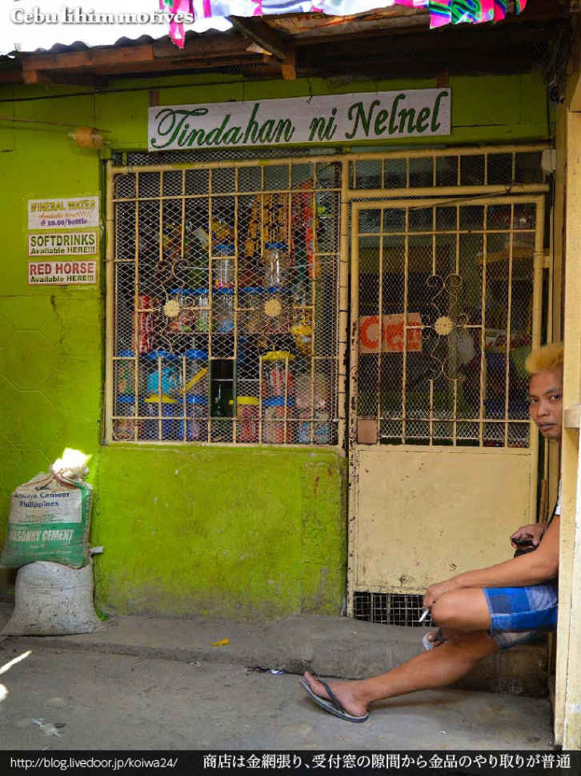
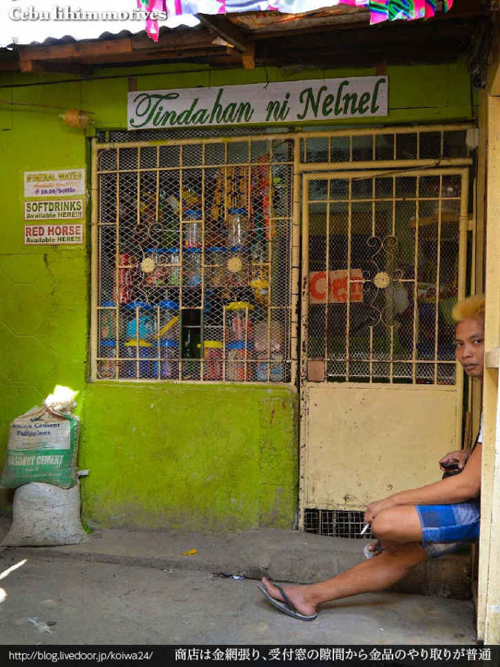

| シックスサマナ 第22号 そうだ、刑務所へ行こう 人生丸ごと断捨離せよ！ | |
| クーロン黒沢 & アイリス横山 & 梅宮貴子 & 西山たけし & サボール | |
| Six Samana (2015) | |
目次
特集／そうだ、刑務所へ行こう
珈琲／橋愛知県知多郡武豊町
愛知県・常滑から路線バスで知多方面へ向かう。
適当なタイミングでバスを降りると、とても駅名と思えない「上ゲ（ＡＧＥ）」という駅があった。「浦島太郎伝説」が残る武豊町の無人駅だ。
名鉄の駅周辺をうろつきまわる。カラオケ喫茶をいくつか見つけたが、自分の趣味ではないのでスルー。
そんなとき、視界の隅に古い建物が......。トタンの壁は突如、海底から浮き上がってきたかのようにサビサビだ。
劣化マニアの自分には堪えられない趣がある。これはいい被写体だと感心しながら正面にまわってみると──唖然。てっきり廃屋と思ったのがまだ現役の、しかも喫茶店だったのだ。
窓から見えるカーテンの柄にも味がある。ありすぎる。数えきれない客の吐息やタバコの煙が染みこんだこのカーテン、一時間でも眺められるぼくは変態かもしれない。
ドアには｢営業中」とあるけれど、古い喫茶店というものは、どんなに大きな「営業中」の看板がかかっていようと油断できない。閉店後も、廃業後も「営業中」の店は山ほどある。
ドアは無事開いた。天井からチューリップライトがぶら下がっていた。壁紙は見る角度を変えると光り方も変わる凝ったもので、まるで金のウロコだった。
カウンターにはお婆ちゃんがひとり、こっちを眺め「いらっしゃぁい」と微笑んでいる。泣けた......ド昭和でやんすね。
ド昭和空間でママさんとふたりきり、コーヒーをすすった。町の移り変わりや夏祭りのことなど、いい話をたくさんしてもらった。あっという間の二時間だった。
充分楽しんだあと、近くの公園のベンチでちょっと思う。ここは浦島太郎伝説が残る武豊町。
壁紙が輝く店内は宴の部屋。ママさんは乙姫。さきほどの喫茶店は竜宮城だったのかも......。
もらったマッチは玉手箱。でも｢決して開けるな｣とは言われなかった。ためしに開けてタバコに火をつけた。ここから先のことは書けない。
（了）
クーロン黒沢
シックスサマナ管理人 http://sixsamana.com/
公式サイト 告知君 http://www.hehehe.net/
運のいい人・悪い人
秋の週末、体験モニターとして日産の電気自動車（ＥＶ）に乗った。
ガソリンいらず、電気だけで走る夢のクルマ。しかも今回は日産のディーラーで充電すれば電気代も無料という大盤振る舞いである。
やろうと思えばタダで日本を横断することも可能だが、今回は慎み深く小旅行にとどめておいた。とは言ってもまるまる３日間。関東一円６００キロも乗り倒したわけだが......。
金曜日の午後、日産のディーラーで「リーフ」という電気自動車を受け取った。
満充電で約２００キロという業界トップクラスの走行距離。国内販売されている電気自動車の中では最も実用的なモデルと言われている。
どこに行こうか......。しばらく悩んだ後、ひとまず東北道で北に向かうことにした。
生まれて初めて体験した電気自動車の乗り心地は中々良かった。加速感は同クラスのガソリン車を上回り、どことなくスポーツカー感覚。これぞ羊の皮を被った狼。
ただ残念なことに、フルパワーの狼モードは電力消費もすさまじく、平時のドライブはエコモードでチンタラ走るのがこの車のスタイルだろう。
そうこうするうち、電池残量が３割を切った。
ディーラーの巧みなセールストークで日本国中くまなく充電施設があるみたいに洗脳されていた私だが、30分でチャージできる急速充電スタンド（通常充電は８時間）は彼らが言うほど見当たらない。
大きめの日産ディーラーは大抵、充電設備を備えているものの、夜間は締め出されてしまうし、充電可能な道の駅や役所も大抵は夕方で終わってしまう。
24時間の充電スタンドは田舎に行くほどレアとなり、栃木辺りでは20〜30キロ圏内にひとつあればラッキー。だからかもしれないが、走っているだけなのにむちやくちゃ心細くなる。
ようやく給電ポイントにたどり着いたとき、バッテリー残量は10パーセントを切っていた。電気自動車が珍しい今は利用する人もまばらだが、これで５台待ちなら充電終了まで３時間か。暴動が起きるな......。
その夜、寒風吹きすさぶ橋の上に立ち、鬼怒川を挟んだ両側に立ち並ぶ、暗く寂しい温泉街をぼんやりと眺めた。灯りのついた窓は全体の２割もない。人に例えたら危篤状態？ 私自身も傍から見れば自殺志願者みたいだろうな。
暗澹たる気分のまま、うらぶれた鬼怒川温泉でメシを喰う気にもなれず、わざわざ30キロあまり離れた宇都宮のファミレスに避難。パチンコ帰りのＤＱＮカップルに囲まれ、ようやく孤独感から逃れることができたのだった。
深夜、夜道をあてもなく走っていたところ、暗い山中に煌々と輝く毒々しい建物が目に止まった。
宿泊６７００円より──という貼り紙に釣られて近づくと、脇の茂みからレザーフェイスが飛び出してきそうな、禍々しく煤け果てた紫色の看板に、見世物小屋風のおどろおどろしい書体で「ホテル・アリスのたまて箱」という文字が踊っていた。
各部屋につけられた名前には独特のセンスが光っている。
「秘密の秘密の打ち明け話」
「ヤシの木陰でどんぶらこ」
といった、いかにもラブホ風な名前に始まって、
「ビバ・パリジェンヌ」
「ミラノコレクション」
カッコええ名前付けてみっぺ、と、今にもオーナーの酒焼けしたダミ声が聞こえてきそうなオール横文字（？）の部屋もあれば、
「名前聞く程、ＹＡＢＯじゃない」
なんていう、もはや「ビバ・パリジェンヌ」以上に意味不明の部屋まで選び放題であった。名前を聞かないのがラブホの心構えとはいえ、それを部屋に名付けてしまうのが新しい。どことなく走り屋のチーム名みたいでもあるな。さすがは栃木県......と感心した。
どのへんがＹＡＢＯじゃないのか確認したい思いはあったが、結局この夜はホテル宿泊を断念、博物館の駐車場で車中泊した。
翌朝、寝足りないまま関東平野を南下。続いては茨城県取手市にある「中華街のドストエフスキー」こと岡本先生宅を目指す。
道中、国道１２１号沿いに、ギチギチにゴミが詰め込まれた廃店舗を発見。カーテンのないガラス戸の奥には、わけのわからない段ボールがグチャグチャに積み上げられ、立錐の余地もなさそう。
どこから見てもゴミ屋敷だが、そんな建物の脇で自己主張する「丸子食堂」という立派な巨大看板が気になる。しかも看板の陰で正体不明の老婆が地べたにしゃがみ、こちらを凝視していた。
建物正面には真新しいクロネコヤマトののぼりが数本。「ここから荷物が送れます」というメッセージを虚しくたなびかせていたが、私にはここでメシを喰う勇気も、ここから荷物を送る度胸もない。
こみ上げる笑いを押し殺していたところ、婆さんの眼光がいよいよ鋭くなったため、撮影を切り上げて早々に退散した。
のんびり安全運転で岡本邸に着いたのは日没後。先生の近況は別の機会にご紹介させていただくとして、翌日、私は千葉県のとある喫茶店で、地元在住の読者からひとりの外国人を紹介された。
日本在住17年。目を閉じれば日本人レベルの日本語を操るその男性。元々アジア某国代表のバレーボール選手だったそうだが、国際試合で韓国を訪れたさい、選手団の半数が真夜中のホテルから脱走。彼も同様に抜け出してソウル市内のドヤに潜伏。約一年半、あちこちの建設現場で肉体労働に従事した。
韓国生活に慣れて来ると、揺るぎない階層社会と白人以外の外国人を極端に見下す国民性に嫌気が差し、日本移住を決意。現在は日本で合法的な滞在資格を手に入れ、この一帯で手広く事業を営んでいる。
さて、ここで皆さんは疑問に思うだろう。そもそも韓国に不法滞在中の身分で、どうやって日本に来られたのか？
答えは簡単。漁船の船長にカネを払い、深夜、船倉に隠れて密航してきたのだ。これ、戦後ではなく90年代の話だって。
彼の存在を知るのは船長だけ。大勢の船員たちは何も知らされていない。むろん発覚すれば大事件かつ、相当ややこしい事態である。
海の真ん中で事情を知らない船員に見つかって騒ぎとなれば、船長の独断で「いなかったこと」にされる可能性もあると聞いた。早い話、消されてしまうわけだ。実際、船に乗ったっきり、行方不明になってしまう密航者は少なくないという。
ここまで危ない橋を渡っても、死ぬことも捕まることもなく、幸せに暮らせる人がいる反面、ささいな微罪やでっちあげで囚われの身となり、地獄のような刑務所でドブみたいな人生を送る同胞たちが後を絶たない。
そこで今回の「そうだ、刑務所へ行こう」特集。
プノンペンの刑務所に居ながら、日本の出会い系サイトのサクラとして毎月の生活費を稼いでいた男を筆頭に、香港、タイ、フィリピン、カンボジアで囚人経験のある日本人が続々登場！
我々の中の「刑務所」イメージを根底から覆す、海外刑務所の驚くべき実情。勝手の違う異国の最底辺を生き延びた先人サバイバーたちの「底辺の処世術」がいま明らかに......。これがホントのセカ囚ってやつかもね！
最後にお詫びをひとつ。今号は特集のボリュームが大きくなりすぎ「ケチケチ・グルの海外節約生活」「ベトナム屋根裏エロサイト物語」をやむなく休載とさせて頂いた。
代わりと言っては何だが、現役精神病院ナースによるビッグな新連載がスタート。こちらもご期待あれ！
（了）
９月25日 プノンペン
シェムリアップ在住の知人から、近年あちらでも激増中の「勘違い起業家」エピソードを聞いた。日本からレトルトカレー２００食を持参し、これを一食８ドルで売るんです。日本の味、懐かしいでしょ？ と胸を張るおっさん。
一流ホテルに宅配するとか、ツアー会社と提携するとか、夢はでかいが自分は動く気コカ・コーラゼロ。そもそも、レトルトカレーを温めてご飯にぶっかけた非常食が、８ドルで飛ぶように売れると信じている時点で終わってる。
午後、本因坊とともに、とある安宿に貼られてあった日本語の求人広告に電話してみた。しばらくして、広告を出した張本人が登場。よくよく話すとシックスサマナの読者だった......。
９月26日 プノンペン
昨日知り合った起業家、Ｘさんのオフィスに本因坊がお邪魔した。事務所の隅にどこかで見たことのある女がいたと思ったら、以前、別件でほんの短期間だけ雇用して、一日中、Facebookばかりやっていたからクビにした札付きのＦＢ中毒女だった。
勘違いといえば、私も立派な勘違い起業家のひとりである。先日開業したミニマートは大失敗。ひどさのレベルが悲しさを通り越して笑ってしまうほど。オープンからわずか一ヶ月でスピード廃業を決め、今日はその後片付けである......。
もともと寂しい立地だったのが主な敗因だが、それにしても客が来ない。子供しか来ない。親の手を引っ張って一日三回買い物に来るハードリピーターのお得意さんもいたが、安い菓子が何十個売れたって１個１００リエルとかの儲け。１００リエルって幾らかって？ 日本円に換算できないくらいの額だよ。ローカルビジネスの恐ろしさを骨の髄まで味わい、３日目にして「これはヤバイ。早くやめないとヤバイ」そればかり考えていた。
９月27日 プノンペン
本誌に「人を呪わば穴二つ」を連載中の西山たけし氏がカンボジアに来た。このあと日本→メキシコ→キューバと移動し、最後にボルネオの首狩り族を訪問して干し首を探すとのこと。
かつて彼が日本で商売をしていたとき、ヤクザっぽくてチャラチャラした人妻デリヘルの経営者と知り合った。おばさんは大勢いるのに、みんなどうしておばさんに注目しないのかなぁ？ が口癖の嫌なやつだったそうだが、それが後に桶川でストーカー殺人を犯す小松和人だった──というエピソードをはじめ、壮絶な話が次から次と......。
この日は西山氏のご希望で、プノンペンの座頭市こと井上さんを引き連れ、うすら暗いレストランで会食。客は我々だけ。化粧の厚い艶っぽい女が一人で給仕していたが、我々がトイレに行くとなぜかこの女が必ず付いてきて、ついてくるだけで何かするわけではないのだが、そばでずっと排尿が終わるのを待っているのだった......。何かのサービスなのか？ 怖すぎて確認できなかった。
井上さん、日本でサラリーマンをしていた頃、市販のエロビデオを見て「これなら勝てる」と思い、趣味で撮ったハメ撮りビデオをメーカー宛てに投稿したところ、某人気メーカーから「産地直送シリーズ」として３〜４タイトルがシリーズ化。
ビデオ情報誌に自分の作品がレビューされているのを見たときは、わけもなく怖くなってその雑誌を全部買い占めてしまったという。
９月30日 プノンペン
西山氏からまじないや魔除け、霊的防御のため身体に入れるタトゥーの話を聞いた。タイでは女性でもこうしたタトゥーを入れる者が多いが、特殊なインクを用いて、身体が暖まったり、興奮したときだけ模様を浮き上がらせたりできるそうだ。
女性以外にも銀行員など、お堅い職業のひとなどが「普段見えないタトゥー」を入れていることがあるらしい。また、マニアは絵柄を見ただけで、誰が彫ったかすぐに分かるという。
10月１日 プノンペン
出発する西山氏を見送って空港へ。彼がラオスの奥地で裸族の村を訪れたとき、オッパイ丸出しの女の子と仲良くなって、写真を撮らせてもらおうとＴシャツを渡したところ、「恥ずかしい」とすぐ脱いでしまい、オッパイ丸出しの写真は平気で撮らせてくれた──という話が最高だった。
キューバのイタコにマルクスやレーニンの霊を呼び出してもらった話も面白かったが、これは機会があればご本人に語っていただきたいと思う。
10月２日 プノンペン
ガーディアンというイギリスの新聞から、私がカンボジアでやっている小さな商売を取材してやるというメールが......。それがまあ、横柄な内容でびっくりした。
午後、セコム風の新しい警備会社と契約した知人を訪ねた。24時間、だらけきったチンピラ風の警備員を家の前に立たせる従来の仕組みと異なり、センサーが反応すると本部に通報が入り、近くの詰め所から基本５分程度で警備員がやって来るというシステム。いざというとき誰も来ない可能性大。
10月３日 プノンペン
小雨降る中、スラムの路地裏にある井上ハウス訪問。門が閉じていたので外から様子を伺うと、どうも様子がおかしい。耳をすますと奥の方から甲高い声で「大変です！大変です！」と叫ぶ声。
大変なのはわかったが、門が開かず中に入れない。どうしようもない状況のなか、外から「どうしたの！」と呼びかけると、中の変圧器が燃えているらしい......。シックスサマナが初めての読者のために説明すると、井上さんは完全失明のどめくらである。
只事ではない状況だが、焦るばかりで何もできず、しばらく騒いでいたところ、何分かしてようやく隣室から70歳オーバーになる大家のＦ原さんが眠そうな顔で顔を出し、真っ黒に焦げた変圧器を外に出した。まさに不幸中の幸いだが、ケーブルの焼け焦げた匂いが充満して部屋はとてつもないことになっていた。
大家のＦ原さんはいつ死んでもおかしくない老人だが、自称プログラマーの草分け的存在。パスポートを捨てて無国籍人となった今も、部屋の片隅には風化しかけたＣやフォートランの参考書が積んである。
さて、改めて焦げ臭い井上部屋を見回すと、目に入るもの全てが「ホコリ色」。一応パソコンとかもあるのだが、清朝末期の農民の部屋みたいな雰囲気ですごい。
そんな中、井上さんはいつもパンツ一丁。赤塚不二夫の「デカパン」と同じ体型で同じ柄のデカパンを履いているため生き写しなのだが、なぜか50過ぎて髪の毛だけは20代のようにフサフサ。白髪も一本もない。先ほどの大家・Ｆ原さんは、欲求不満か男色家なのか、そんな井上さんをベッドに寝かせ、何気に身体を触ってきたり、散歩に連れて行ってやるから月１５０ドル寄越せとか、忘れた頃に無茶苦茶な要求を次々と突きつけてくる......。
しばらく井上さんと世間話をしていると、姿を消したＦ原さんが「焼けた変圧器の変わりだ」と言いながら、どこからか小さな冷蔵庫くらいある機械を運んで来た。やたらでかいので良く見ると、ボディに「５ＫＷ」と書いてある。それを、ボロボロに風化した１００均のタコ足みたいなのに繋ごうとするので慌てて制止した。
どこかの日本語学校で使っていた変圧器を、廃校のおり貰い受けて来たらしい。こんなの挿したら電線全部燃えますよ脅かすと、諦めてはくれたがどこか不満気な表情だった......
薄汚れたタッパーに野菜と酢を入れ、指でこねくり回してそれを口に運びながら、日本の妻とは別れた。日本にはもう帰らない......と言葉少なに語るＦ原さん。歳を訊ねると「すべては神が決めること。年齢に異常な興味でもあるのか」とたしなめられた。こんな具合じゃ、パスポートのことなんざ訊けないわな......。
10月４日 プノンペン
徹夜で原稿三本アップ。朝イチでローカル市場へ行った。やっぱり市場はストレス溜まる。なんつーか、ここで毎日買い物してる人、尊敬するわ。
10月13日 プノンペン
夕方、井上ハウス訪問。一万円生活の取材。大雨で一帯が床上浸水していて大変そうだった。部屋中にプラスチックの椅子が散乱し、その上にそれぞれ荷物がのせられていてアートっぽかった。途中から大家のＦ原さん登場するも、入れ歯がバシバシ外れそうで獅子舞のようだった。
途中、プノンペン滞在中の海老蔵さんと鉢合わせる。予想通り彼のワンマンショー。無脳症の女からシリンダーヘッドから野菜と果物の値段から料理まで話題豊富な男。彼の生トークを聴きたい方は、本誌公式ポッドキャストでご堪能ください。
10月14日 プノンペン
井上さんと双璧をなす、プノンペン究極貧乏生活の実践者であるＴさんから「クロワッサン症候群」という言葉を聞いた。
バブル崩壊後、雑誌クロワッサンが提唱する「自立した女性像」に共感し、外国人（白人に限る）の子供を何人も孕み、シングルマザーとして一人寂しく生きてきた女性たちが、編集方針の変換であっさり置いてきぼりにされ、目標を失い愕然とすることなんだそうな。いいね！
かつては（前歯が抜ける前は）金持ち外国人専門のインターナショナルスクールで教師をしていた経験もあるＴさん。カンボジア有数の権力者の一族に嫁入りした、ある日本人女性の一人息子を教えていたこともある。このガキがいかにとんでもない不良か......という話を30分聞かされた。
10月18日 プノンペン
今、プノンペン市民を無作為に20人集めたら、数パーセントはウサギ並みに瞳が真っ赤っ赤。今この町は結膜炎だらけ。皆さんも手洗いは忘れずに！
昨日夕方、突然左目がゴロゴロ。ヤバイ......胸騒ぎを鎮めながらホコリまみれの裏道を行ったり来たり、料理が趣味の知人宅で豪華な夕食をご馳走になった。
談笑中も左目ゴロゴロ。目ヤニと痒みと涙が止まらず、まともに談笑できなくなっておいとま。これは結膜炎だと確信した私は、薬つけなきゃ！と気ばかり焦るも（まともそうな）薬局が見つからず、翌朝、左目は腫れてまるで別人。無残な状態に。
ウィルス性結膜炎の治療法はなく、安静にして体内に抗体ができるのを待つばかり。不快でたまらず、目が見えないと仕事にも差し支える。困った困った......。
10月19日 プノンペン
修行僧ことＴさんとお茶をした。雨季もそろそろ終わりに近づき、しばしばシメの豪雨に見舞われるプノンペン。トタン屋根のバラックに住むＴさんはそのたびに腰まで泥水に浸かり、夜はプールのようになった自室に浮かぶ板切れの上で、傘をさしながら寝るという。皆さん信じられないと思うけど、これ、実話です。
そんなＴさんはカネの話に敏感だ。プノンペンから２００キロ余り離れた港町、シハヌークビルに住んでいたある初老の日本人が近頃、認知症でどんどんボケはじめているらしい。で、このおっさん、地元の銀行に40万ドルという大金を預けていた。
カンボジアにはまともじゃない銀行も沢山あるが、目先の金利に動かされた少なくない日本人が、わけのわからない銀行に有り金まとめて定期預金しており、たまにトラブルを耳にする。
長期滞在のおっさんほどカネに関して他人を信じず、口も堅い。勿論それで良いのだが、認知症となると話は別。おっさんの40万ドルはどうなるのか？ ぶっちゃけ皆、本人よりカネの方を心配してるわけだが、生々しすぎて聞くに訊けないようだ。
10月21日 プノンペン
シックスサマナの表紙撮影。市場に行ってお盆に燃やす用に売られている地獄銀行発行の札束を大量購入。ガソリンスタンド横の空き地にばら撒いて写真を撮ったりした。遠目には本物の札とほとんど区別がつかない精巧なものだが、遠巻きに地元の不良少年達からガン見されて怖かった。
（つづく）
シャブ中の妹を訪ねて三千里
思い出したくもない過去ですが、特集絡みで思い出しました。数年前、当時私が交際していたタイ人女性のろくでもない妹が、覚醒剤の販売目的所持で逮捕されたため、はるばるタイの刑務所まで会いに行ったことがあります。
なんと実の姉が同行を嫌がったため、日本人である私の単身行。日本と同様、タイの刑務所も男女別に別れていますが、まずは刑務所まで行くのがひと苦労でした。
スクンビットのホテル前で客待ちしていたタクシーに、刑務所の名前と大体の場所を告げたところ、なんと往復４千バーツの宣告。
バンコクからパタヤまで、２千バーツもあれば余裕で往復出来た時代の話ですから、バンコク近郊で４千バーツはいくら何でも高すぎる。
勿論、自分がボッタくられている自覚はありましたが、目的地がどこだかはっきりしない状況下では、相手の言い値がどう理不尽なのか、交渉できる材料がありません。
ネットで何でも調べられる今と違い、頼りは運転手本人のリサーチ能力。いずれにしても時間は限られており、さっさと出発しないと戻れなくなります。私は運を天に任せることにしました。
見るからに胡散臭いあばただらけの運転手は、なぜか頭にテンガロンハットを乗せ、車内の調度品はジャマイカ風。シフトカバーに大きなドクロのノブ、メーターは豪華な細工をした木製の箱に収まっていました......。
タクシーはスクンビットから高速道路に乗り、一路、バンコク郊外にあるという女性麻薬囚専用刑務所へ向かいます。
しばらく走ると、ドンムアン空港からランシットの大交差点を右折。ドリームランドから20分ほど東に行った場所に、刑務所にしては低い塀の巨大な施設がありました。
窓に鉄格子もないけど、ホントにここなの？
「チャイカップ（そうです！）」
自信満々で即答する運転手。ところがタクシーを降り、建物から出てきた係員の女性に確認したところ、同じ麻薬は麻薬でも刑務所ではなく、ここは薬物常習者のためのリハビリセンターとのこと。
違うじゃん......。文句を言いつつアユタヤまで戻り、道行く人々に尋ねながら右往左往した結果、ようやくたどり着いたのが、周辺一帯を縄張りとするパトゥンタニ警察署脇にそびえる、超広大な「タンヤブリー・ヤク中女性囚人矯正所：Thanya Buri Women Correctional Institution for Drug Addicted Prisoners」でした。
こちらに収容されている女性囚人は、全員が薬物事犯。女優ばりのスーパー美女も、母を思わせるやさしげな老婆も、中の女は看守を除いて、すべて病的な薬物中毒者という大変わかりやすい施設です。
面会できるのは囚人の家族のみ。それも午前中のみという大変厳しい決まりがあります。厳密には姉の彼氏（未入籍）である私に、そもそも面会の権利はありません。
しかしそこはタイですから、適当にウソついて入籍済みだと押し通したところ、割と簡単に許可が出ました。さすがだ......。
空港ばりのセキュリティーゾーンを抜け、ポケットの中を念入りに調べられ、携帯から財布まですべてを預けると、ようやく面会所に入れます。
面会スペースは質素でした。全長10メートルの薄暗い廊下に、券売所のような小さな窓口が15人分並んでいて、指定された番号の窓口でしばらく待っていると、壁の向こうにゾロゾロと囚人たちがやって来ます。バイセクシャルの我が妹もいました。
全然やつれてもいない妹は、私の顔を見るなり大号泣してわめき始めました。
「（アンタ以外）誰も面会に来てくれない、お金がないとムショで暮らすのは大変なんだからッ！」
なんなんだこいつは......。誰も来ないのはお前の人望が無いからだろ。ちなみに与えられた時間はたったの15分。短すぎる！
「相部屋の子にハブラシまで借りてるのよッ！ おカネがないと毎日お粥しか食べられないの！ 生きるのがやっとなの！」
丸々太って、どんだけ栄養満点のお粥なんだよ。とまあ、どこから突っ込んで良いやら迷い放題の自分大好きっ娘ちゃんです。デブで近眼じゃなきゃもう少し優しくしてやったのに......。
初めは取り乱していた妹も、言いたいことを言って落ち着いたのか途中から冷静になり、
「買ってきてもらいたいものを言うから、忘れないで覚えてよ！」とか、身分をわきまえず威張り始めました。
ちなみにご希望の品は、ハブラシ、シャンプー、ジュース、生理用品、お菓子、インスタントラーメンなど。どうでもいい品ばかりですが、将来、みなさんの参考になるかもしれないので一応記しておきます。
中でもインスタントラーメンは重要なものらしく、三度も念押しされました。刑務所内は現金が流通していないため、お菓子やインスタントラーメンが物々交換のための代用通貨になっているそうです。
「......あとは刑務所宛てに送金してくれれば、ムショの売店で買い物もできるわ！」
したり顔で指示を飛ばす妹の顔をじっと眺め、呆れつつも心の中で罵りました。他人に迷惑かけてる自覚ゼロ。さすがはヤク中。このまま死んでくれないだろうか......。なんて思った次第です。
結局、薄暗くなったバンコクのホテルに戻ったとき、木箱に入ったメーターの数字は３千数百バーツを示していました。
実際払ったのは約束した４千バーツですが、実はそれほどボラれていなかった？ と思いきや、後日、流しのタクシーで自力往復してみたところ、半日走って千バーツでお釣りが来ました。
くだんの妹は翌年出所し、今では裁判所で出会った旦那（麻薬販売で捕まった全身刺青のタイ人）と仲むつまじく暮らしているそうです。もう二度と顔を見ることも無いでしょう。さようなら。
（了）
あらすじ
マニラのタクシー会社からせしめた退職金で、念願の新築コンドミニアムを購入した北林。
ところが肝心の建築工事が一向に進まず毎日イライラ。そんなとき、気晴らしに訪れたタイ・バンコクの場末で、真新しい完成済みアパートに一目惚れ。何をトチ狂ったか30万バーツで衝動買い。
ソープも近いし女連れ込み放題。ワッハッハッ、いい感じだぜ。と不動産王気分もつかの間、アパート真隣のスラムで大火災が発生した！
スラム街の人間加湿器
北林が最上階の角部屋を購入したアパート「ＪＪタワー」は、周りに高い建物がひとつもない貧民街の中心という立地にあった。
エレベーターは無いが、息を切らせて登り切った６階からの眺めは格別。バルコニーから下界を眺めるだけで優越感もひとしお、手軽に「成り上がり」気分が味わえた。
遥か彼方のペップリー通りに輝くソープ街のネオンも一望でき、この「１００万バーツの夜景」は北林の自慢でもあったが、今日に限って、窓の外はオレンジ色に染まっていた──。
火事だ！ ＪＪタワーを取り囲む巨大スラムが、まるでオレンジ色の絨毯を敷き詰めたかの如く、激しく燃えていた。
下からの放射熱で、バルコニーの手すりは触れないほど熱い。風向きが変わるたび、目の前が煙で真っ白に染まり、炎は足元まで達しようとしていた。
西側のスラムはほぼ全焼のようだ。目覚めたときは悲鳴や怒声が喧しかったが、いつの間にやら静まり返り、聞こえて来るのは耳鳴りのような、不気味な風の音ばかり。ふと我に返ると、ほとんどの住人が既に避難を終えていた。
バルコニーから駐車場を見下ろすと、着の身着のままの人だかりが全員こちらを見上げ、早く逃げろ！ と叫んでいる。
チクショーッ。バカ言ってんじゃねえよォ。オメーッ、買ってまだ一年も経ってねぇのに燃やしちまってたまるかってんだヨォ！
北林はクローゼットから園芸用ホースを掴み取ると、それをバルコニーの蛇口に繋げコックをひねった。幸い水は勢い良く出た。
目一杯水を出し、道路を一本挟んだスラムに放水する。６階から撒いた水はミスト状に散らばり、火を消す前に99パーセントが蒸発。消火にはほとんど影響しなかったが、心意気だけは充分すぎるほど伝わった。
それが証拠に、水が舞うたび「ウォーッ」という地響きのような歓声が、駐車場から沸いてくる。
顔を上げると、屋上すれすれにホバリングするテレビ局のヘリコプターが見えた。パンツ一丁で水を撒く北林にカメラが向けられている。
北林はいつもより余計にギョロリと目を剥き、歌舞伎役者さながらに、ホースを握って歯を食いしばりながら見栄を切った。さあ、好きなだけ撮りさらせ！
そうこうする間にバンコク中の消防隊が到着。懸命の消火にあたり、未曾有の大火災はなんとか消し止められた。
建物の一部が焦げたものの、ＪＪタワーも無事だった。煙と炎に巻かれながら消火にあたった北林の姿は、なんと夜のニュースのトップ映像となり、大勢のタイ国民が涙を流したという。
ヒーロー扱いだぜオメーッ、消防署からは表彰されるし。国会議員が慰問に来るしよォ。
このとき大勢の役人を引き連れ、作業服姿でＪＪタワーを慰問した議員こそ、何を隠そう後にタイ首相となるアビシット氏である。
一時的な有名人となった北林は、つかの間、夜の繁華街で英雄扱いしてもらえたが、他人の好意にとことん遠慮のない性格だけに、翌週には早くも効果が薄れ、翌々週にはただの人になっていた。
伝説のピンブを目指すも......
この「期間限定モテ期」に、あるタイ人ホステスから男絡みの相談を受けた。
ヒモ男があまりにダメで切りたくなったが、逆恨みした男がストーカー化。嫌がらせを受けている──とのこと。
当初、女の頼みで「新しい恋人役」を引き受けた北林。あっさり追い散らせると思いきや、そのストーカー男は中々の強敵だった。
オレのせいで食いっぱぐれるんだからしょーがねぇけど、後つけられたり、とにかくしつけえヤツでよォ......。
あんときゃ他のタイ人から、危ないから引っ越せだの散々言われて参ったわ。確かにあのままだったら刺されてたかもしれねェ。
引っ越しは面倒くさい。第一カネがかかる。そこで北林は考えた。ヒモ男に消えてもらえばいいじゃないかと......。このあたりの思考回路が「西東京ＤＱＮ的」というか、我々と根底から異なる部分である。
北林の悪い方の知り合いに「人殺しソンポック」という頭のおかしな殺人警官がいた。繁華街の店から弱い者順にみかじめを集め、タダ食い、タダ酒なんでもあり。地元のチンピラなら全員知ってるゴロツキである。
レイプ、殺し、強請り、たかり、なんでもアリでよォ。何人殺したか自分でも覚えてねェみてえなキチガイだけど、家柄だけは良くてよォ......。悪さばっかしてんのに全然平気なんだ。
ソンポックを訪ねた北林は、ストーカー野郎をちょっとばかし脅かしてくれないかと頼み、（女から預かった）カネを渡した。
殺せと頼んだ覚えはない。覚えはないが、問題のヒモは血の気の多い向こう見ずで、ソンポックはピンを抜いた手榴弾のような性格。
ただで済むとは思わなかったが、案の定、ヒモ男はその日を境に、そもそもこの世に存在しなかったかのように姿を消し、永久に見かけなくなった。
結果的に良かったんじゃねえの？ ぷっつり消えちまったもんだから女にも喜ばれたしよォ、で、今度はオレがその女の部屋に転がり込んじまって。ウェッヘッヘッ。
半ばなし崩し的に、ヒモの後釜に収まった北林。女を店まで送り迎えする以外、女の部屋でひたすらゴロゴロ。働かないのは気楽だが、なにせ退屈だった。
タイでは自炊することもなく、洗濯も他人任せ。ごくたまに、他のヒモと男っぷりを競うバイクレースがある以外、やることと言えばセックスとスヌーカーしか無い。
同じ女とのセックスも、最初はいいがすぐ飽きる。そうなると自然に、他の女がますますキレイに見えてくる。
こうして大概のヒモが浮気に走るわけだが、北林の場合も同じ店の別の女に手を出し、これが面白いようにすぐバレた。
タイの女は直情型だからよォ......。カーッとなるとすぐモノ投げんだわ。そんなもん投げて壊しても、結局てめぇが全部掃除するハメになるんだけどよォ。
感情が高まった女は、獣のような目付きで北林を睨み、叫び、ポラリス（５リットル入りのミネラルウォーター）のガラスボトルを次から次と床に投げつけた。
なみなみ水が入ったボトルが床に当たって爆発。ガラスの破片が水びだしの床に散乱し、ふたりの愛の巣はまさに修羅場となった......。
好きなだけ居て良いのよ──なんて言ったってよォ、そんなじゃよォ。修行じゃねえんだから、３ヶ月でオサラバしたぜ。
まァ、風俗の女なんて大概不安定だから長く続かねぇな。続くとしたら男がよっぽど我慢強いか、ＤＶで女を支配してンじゃねえの？ タイにはそういうの結構いるぜ！
ヒモという職業、必ずしも自由人には向いてない。身をもってそれを証明した北林が次回、バンコクで世界就職に働き出す！
（つづく）
クワ科の木で「ガジュマル」という植物が御座います。
生命力が強く、蛸の足のような幹や気根は幾枝にも枝分かれして行き、様々な物を呑み込み、何もかも一体化してしまいます。
日本に於いては沖縄や小笠原に見られ、特に沖縄では「魔除け」として信奉され、精霊の宿る木と云う事で庶民は崇拝の対象として居るわけです。
当地インドシナに於いても、ガジュマルは畏怖を含めた崇拝の対象と成って居り、辺鄙な場所に大木が鎮座する光景を見る事が出来ます。
精霊に加え、あらゆる霊魂がガジュマルに据わると云われていることから、一般人が簡易に切れば「不運を呼び起こす」と云われ、祟られる事を恐れるが為で御座います。
このようにクワ科の木は霊的な成分を持ち、見た目も荘厳。禍々しくも見える妖しい木なのであります。
キューバ在住時代、私は西アフリカ・バントゥーの奴隷土人が齎した神霊信仰に関わった事に因り、其れ以降、人生全て霊的な面を主体に生きて参りました。
十三年前から棲む此処ラオスは云うに及ばず、来た目的も活動するに相応しいと捉え、棲みついた経緯も全てが霊性主体。
其の中で、クワ科の木に纏わる話が御座います。
ラオスに棲み始めてから、数年は借家住いで在りました。家屋を購入なぞ毛頭考えておらなかった頃、
「市内中心部に一軒家が有るが買わないか？」
と、と或るラオス人から持ち掛けられたのです。
それもタダ同然の金額、狡猾なラオス人が持ち掛けるので有るから、間違い無く「曰く付き」物件と思って居りました。
どうせ自殺や殺人なぞあったに違いない......。そんな感じで御座いましたが、例え自縛した霊が徘徊して居っても、私には対策が有りますので余り気にせず購入したわけです。
ところが──。蓋を開けてみれば其処は樹齢数百年を越えたクワ科の大木が敷地内に跨って居ったのです。
家屋の在るパクタン村は代々凄絶な霊媒師を輩出することで知られ、一昔前は「ビエンチャンのパクタン村」という村名だけで、良くも悪くも全国に名が轟いて居りました。
パクタン村の邪霊及び呪術師──此の名を聞いただけで皆々畏れ慄く時代が有ったのです。
しかし、75年に政権を握った無神論の共産政権は一気に迷信の排除に取り掛かり、（彼らとしては）悪名高いパクタン村の呪術師を集中的に狩った事に因り殲滅されてしまいました。
しかし、彼ら呪術師が居なくなっても、彼らが仕えた邪霊の棲む密林は今でも活きて居るのです。
其の名残が私の家に跨る大木、其れに加え村内に同様の大木が五つほど残存して居るのです。
また、首都の中心部で有るにも関わらず広大な密林が広がり、密林奥には古の術師が建てた邪霊を奉る大きな社も御座います。発展・開発に湧くラオスですが、此の一帯のみ手を付ける者は全く居りません。
稀に病を患った老女の家族などから「婆さんの体調が悪いのです。あんたの家の木に棲む霊と契を結ばせて遣って呉れませんか？」等と請われることがあり、彼らは屋内の大木面前で儀式を行います。
これは、彼の世と此の世を隔てた婚姻のようなもの。意味合いとして、大病に苦しまず、死ぬとしても安らかに彼の世へ行けるよう、大木に棲む霊と契を交わすわけで御座います。
思えば此の様な家を、ただ同然で手に入れ棲んだ経緯は家屋に跨るクワ科の大木に招かれたと存じます。
さて、同じクワ科でも「更に上を行く木」が有ります。当地にて「クアカオロム」と呼称されるガジュマルに似通った同科の木で御座います。
ガジュマルと同様のクワ科で、矢張り幹は多数に分岐し基本的に気根を地面に垂らすが、ガジュマルよりも本体はかなり細く、気根は地面に垂らすというより、地面に一旦潜り、新芽のように地面から突出し、先端は薇のように渦巻いて頭を出して居る。
ガジュマルなぞと違い、誰でも御目に掛かる事が出来るわけで無く、木が良しとする人物以外には「姿を見せず」、それ自体が意思を持ち、正に「妖木」という言葉が当て嵌まります。
主に山野に分布して居り、山野を生業とする者が知らずに気根を跨いだ場合、神隠しに遭うとされて居ります。
人だけでは無く、獣も同様に跨ぐと神隠しの作用に苛まれ、同じ場所を延々と巡った末に命運尽きる場合も有るのです。
運良くクアカオロムの気根先端のトグロ状部分を発見した者は、其れを知らずとも「摘んで持って行かなければ......」という衝動に駆られ、爾後、霊験新たかな方に相談し、初めて幸運を齎す妖木と知るのです。
更に幸運なパターンは、クアカオロムの本体に遭遇する事で御座います。大木の下に居ると、夜を明かしても獣の目にも留まらず、毒虫や病を媒介する害虫なぞの感覚にも留まらないのです。
クアカオロムを手に入れても、ただ持つだけでは意味が有りません。常日頃「クアカオロム」に語り掛け、己の願望を打ち明ける必要が有ります。
そのような積み重ねでクアカオロムと一体に成る必要が有り、結果クアカオロムの御利益を存分に享受出来るのです。
此のように、自然な導きで手に入れる事が本望ですが、高僧や呪術師へ取得を依頼して然るべき移譲の儀礼を行って授受する場合も御座います。
また、クアカオロムは主の意向を反映する為、同様な儀礼を通じて第三者への移譲も有るのです。
現世利益を追求するのは浮世人の常......。取引額は自動車一台の価格を裕に越すというのが現状で御座います。
が、其の金額を払えるのは富裕者のみ。皮肉な事に、彼の世の事象も此の世の事象も、富める者は更に富み、貧しい物は更に困窮を極めるというのが実態で御座います。
（了）
ビンクの灯りが懐かしい
私はいま、カンボジアにいる......。住んでいるのはアンコール・ワットのあるシエムリアプ。
なぜこうなったかは20号をご覧頂きたいが、結論から言えば私は以前、この連載でも触れたことのある「カンボジアで一番小さな日系旅行会社」へ出戻ることとなった。
実に13年ぶりとなるカンボジア生活。古巣に戻って早くも５か月が経ってしまった......。
２０１５年３月22日。夫婦二人三脚で作り上げたカオマンガイ屋台を妻に託し、シックスサマナ読者にいたずらされた愛娘（注：事の経緯はポッドキャストを聴いてね）と別れを惜しみながら、ＤＪ北林も愛用するエアアジア便で、カンボジアへ実質45分の旅に出た。
ドンムアン空港は中国人だらけだったのに、シエムリアプ便は白人だらけ。さすが、毛唐に人気のキングダム・オブ・ワンダーである。
13年前はタイ人の金持ちの家より小さなターミナルだったシエムリアプ空港。今や名だたるエアラインの飛行機がズラリ。ターミナルはリゾート風にオシャレで、エアコンもある！ ターンテーブルが動いてる！ どうでも良いことにいちいち驚く自分が田舎者みたいだった。
会社からは空港でビジネスビザを取得するよう指示されていた。
飛行機の中は見渡す限りの毛唐......失礼、白人たちが、眉間に皺を寄せながら査証申請書と向き合い、猫背になって必死に記入していた。
こりゃ混むな。と察知した私は、飛行機が着陸するや図体の大きな毛唐を押しのけ、短い脚でパタリロみたいに足をパタパタさせながら、全速力で査証申請カウンターへ駆け込んだ......が！
勝った！ と思ったのもつかの間、さすが21世紀のカンボジア。到着便はエアアジアに限らず、カウンターはビザ待ちの外国人ですでに長蛇の列。私は素直に、そばかすだらけの汚い背中を丸出しにした白人女性の後ろに並んだ。
列に並びながら、新しい空港の建物やＥビザ（カンボジア政府のサイトで発行されるオンラインビザ・トラブルが非常に多い）でモメる白人たちを眺めていると、遠くから「とりドル！」という声が響いた。
スマホ以外やることのない外国人たちが一斉に振り返る。当然私も同じ方向を見る......呼ばれたの私だし。
幸い、それは幻聴でも昔やったＬＳＤのフラッシュバックでもなく、叫んでいたのはイミグレの係官だった。
どこで会ったか定かではない。名前すら忘れていたが、見覚えのある顔ではあった。とりあえず、その男とにこやかに握手した私は「久しぶりだなぁ！」などと社交辞令をかましながら、頭の中の記憶の引き出しを必死に開け閉めしまくった。
ここシエムリアプは、カンボジアナンバーワンの観光都市である。つまりここは、国の中で一番お金が集まるイミグレでもある。
カンボジアでは以前から、地元民が結託して不正を働くことのないよう、そこ出身の係官をよその土地で働かせる習わしがあり、シエムリアプ空港で働いているイミグレ職員の大半も、実はプノンペン出身者だったりする。
そういう余計な豆知識があるせいで、僕の顔を懐かしげに眺めるこの男が何者なのか、尚更わからず混乱する羽目に陥った。
「元気？ 子供は大きくなったでしょう？」
適当な会話をすればするほどドツボにはまる。と、目の前の彼が果てしなく続くビザ待ちの列に目をやった次の瞬間、私の手から書類とパスポートが奪い取られていた。
えっ？ ああっ！ っと思う間もなく、彼のパワーでイミグレと税関をスルーパスした私。斜め後方で列に並んだ腐れ外国人どもが、行列をズルした私の背中を、軽蔑のこもった眼差しで眺めているのを感じた。
ケッ、アジアはコネがあってなんぼなんだよ。悔しかったら来年まで並んでろ！
まぁいいか、とキョロキョロしながらターミナルを出ると、当たり前だがカンボジア人だらけ。
出迎えのカンボジア人が次から次とターミナルから出て来る外国人の名前を手際よく確認し、それぞれの車やバスへ振り分けてゆく。それはまるで、宇宙に逃れた地球人たちが、新天地となる惑星に到着し、各コロニーに割り振られているような光景だった。
......と、バカなことを想像していると、先ほどの自称トモダチがスタンプの押されたパスポートを届けに来てくれた。
私はひとときの優越感とＶＩＰ待遇を与えてくれたこの恩人に、感謝をこめてチップを渡そうとしたが、奴は両手を後ろに組んで頑なに拒否。
日本なら公務員にチップを渡そうとする側からしてアウトだが、この国ではごく普通の挨拶みたいなもんである。
それにしても流石はカンボジア。たかが賄賂の受け取りを拒否しただけで、まるで清廉潔白な役人の鑑のように見えてしまうから不思議だ。
「とりドルよ、俺らはバケン仲間じゃねえーか。ガハハハ！」
先ほどからずっと正体不明だったこの男。最後のひと言で顔と名前が一致した。彼こそは、私が１９９５年頃に通いつめていた「バケン」という夜総会の警備員であった。
当時は武装した非番の警官が警備員をするのが当たり前だったので、今彼がここにいるのはまさに「本来の姿」に戻っているということで、非常に喜ばしいことだ。
正解が出たところで、私は「君ではなく子供に......」とカッコ良いセリフを吐きながら、無理やりチップを渡してその場を離れた。
空港から職場までのタクシー運賃は協定価格の一律７ドル。そして車窓から見えるのは、キレイに舗装され、煌々と照らされた国道６号線と、林立するリゾートホテル群。
便利といえば便利になったものだが、客の荷物に力いっぱいしがみつき、さらにそれを野蛮人丸出しの運転手たちがラグビーボールのように奪い合い、しばしば大喧嘩になったりもする「猿の惑星」めいたカンボジアの原風景は、本当のホントに遠い昔ばなしになってしまったんだなぁと、残念に思った。
昔のシエムリアプはまさに別の星だった。１９９３年のＵＮＴＡＣ（国際連合カンボジア暫定統治機構）時代、ＰＫＯ部隊に余った部屋を宿舎として貸したのがきっかけで安宿を始め、以後、日本人のたまり場として長らく愛されてきた「チェンラ―ゲストハウス」も、今年６月末であえなく閉鎖。
近所に住むカンボジア人の男の子たちを怪しい目で追いながら、遂に子供の頭を布で覆い、物陰に連れ込んでレイプしようとしたスイス人の邸宅は、中途半端なショッピングモールになっていた。
別名・ベトナム領事館と呼ばれたベトナム置屋は面影すらなく、タイが死ぬほど大嫌いなのに、タイの音楽で踊り狂う以外、娯楽がひとつもないカンボジア人男子の夜の社交場「バケン夜総会」も消えていた。
この発展ぶり。すごいと言えばスゴイが、正直つまらない。
ピンク灯や夜総会のネオンでも無いかと、タクシーの後部座席から鞭打ちになるくらいキョロキョロ休みなく探してみたが、町はすっかりキレイになってしまった。
置屋や夜総会のないカンボジアで働くなんて、ガンジャのないオランダ旅行みたいなもんじゃないか。
いやいや、僕は遊ぶためここに来たんじゃない。出稼ぎに来たのだ。色事なんてさっさと忘れろ、忘れろ......いや、ムリだっ！
もうどうなってもいい。開き直った私は運ちゃんに車を停めるよう命じ、奴の目を見ながらサシで女事情を訊ねた。
運転手が顔を上げ、こちらをジロリと眺める。そして沈黙──。北朝鮮じゃあるまいし、情報統制でもあるの？
真一文字に口を閉じ、何やら考え事を巡らしていた運転手。早く言え！ イライラした私が何十回目かの咳払いをした直後、渋々といった感じで声を出した。
「そんなに行きたいなら、あるよ、すげえところがあるよ......」
「ゴクリッ！（唾を飲む音）」
（つづく）
前回までのあらすじ
東南アジアの薄汚いゲストハウス。日焼けした眼光鋭い初老の男が「昔のプノンペンは良かった」だの、訳知り顔で自慢するのを見かけたら、ひとつ尋ねるといい。
「甲高い声で自分の話ばかりする、百貫デブの瀬戸内寂聴を知ってますか──」と。
瞬間、顔が土気色に変わったら、そいつは本物。知らなきゃモグリの知ったか野郎。日本が誇る伝説のトラベル・クソババア、それがブス田だ！ 警戒せよ！ 警戒せよ！
暗黒街の瀬戸内寂聴 その６
ハッパをエサにうら若きバックパッカーを部屋に連れ込み、朦朧とさせ、精を吸い取る......、白木みのるとゾウアザラシを強制交配させたようなババア。プノンペンの女郎蜘蛛ことブス田春代。
大好物はセックスとメシと他人の陰口。病的な被害妄想、蛇蝎のように嫌われた反動か、少しでも優しい顔を見せたら最後、日本人でもカンボジア人でも、男とあれば見境なくストーキングし、プライベートにまでドカスカ入り込んで災いをもたらす──。
カンボジア中部の州都・コンポンチャム。
この国三番目の大都市と言われるが、その気になれば端から端まで歩いて縦断できそうな、静かで何もない町である。
人種を問わず、正体を知るほぼ全員から避けられていた取り扱い注意の危険なババア・ブス田が、ある日突然、宮尾すすむそっくりなカンボジアの軍人と電撃結婚。皆の度肝を抜いたお話は、前回お伝えしたばかり。
そんなブス田が結婚早々コンポンチャムに家を買ったと知って、私は首を傾げた。
日本人とあれば見境なく喰らいつき、同じ話を何時間だろうとエンドレスで語りまくる、寂しがり屋の壊れたラジオ。そんなババアが話し相手もいないくそ田舎に家を買うなんて、一体どういう風の吹き回しだ？
謎が解けたのは、プノンペンからババアが消えた数ヶ月後のこと。その日、私はカンボジア中部を旅したバックパッカーから、カフェでまったり旅の話を聞いていた。
コンポンチャムを訪れた彼が、メコン川のほとりで夕暮れを眺めていたときのこと。
隣にいた見ず知らずのカンボジア人男性が川沿いの遊歩道を指さし、つたない英語で「フクロウババアが来るぞ！」と警告めいた短い叫び声を上げるや、足早にその場を離れていった。
男が指し示した辺りを見ると、土手の遥か彼方から、何やら異様な物体がゆっくりと近づいてくるではないか。
関取めいたアンコ型のデブババアが、真っ赤なマタニティドレスを身にまとい、右手で杖をつきながらヨタヨタと向かってくる。頭の中でサイレンの音が聞こえたが、どうしてなのか理由はわからなかった。
ババアの左手にはひもが握られており、その先っぽは後ろに続くフクロウの足と繋がれていた。
ババアに遅れまいと、必死にヨチヨチ歩きする一羽のフクロウ。ババアは流暢なカンボジア語で携帯電話に何やらまくし立てながら、フクロウを引きずるように大股で歩み寄ってきた。
うっかり見とれていると、ババアが彼の前で足をとめた。
「あんた見かけない顔ね......。日本人？」
現地のババアと思い込んでいただけに、いきなり日本語を浴びせられひどく驚いたそうだが、聞けばババアはこの町に住む日本人で、アタシの旦那は軍の大物。フン・セン警備隊の将軍なのよ！ と自慢された......。そう。フクロウババアとはすなわち、ブス田のことだったのだ。
永遠とも思える立ち話の後、彼はブス田の家に招待された。案内されたのは町外れにある小さな家で、壁は至る所ポスターを剥がした跡だらけ。
「この家、昔は売春宿だったのよッ！ アタシが買ったときはコンドームのポスターだらけでねッ。これ全部、アタシが剥がしたんだからッ。アッハッハッハッ！」
ゲストハウスでもないのに、その家にはブス田の他にも妙な日本人が何人も住み込んでいた。それもなぜか全員男だ。
すれ違ってもそっぽを向いたままの男。始終ブツブツ何やら喋っているが、意味不明でひと言も聞き取れない男。いつも妙な人形を胸に抱き、笑みを浮かべる謎のグラサン野郎......などなど、めったに見ない曲者揃い。
とりあえず、田舎暮らしを楽しむようなタイプが一人もいないのが印象的だったという。
家政婦は見た！変態の館
バックパッカーの話に出てきた「人形を抱いて笑うグラサン男」には私も覚えがあった。
旅行者の集まるプノンペン市内のとあるカフェで、私は偶然その男と同じテーブルに座り、１時間ほど世間話をしたことがあるのだ。
挨拶早々「ポージングに並々ならぬ関心があるロリコンです」と自己紹介したこの男。なぜかいつも、小さなデッサン人形を大切そうに持ち歩いていた。
このグラサン、買った少女に自分の考案したセクシーポーズをとらせ、写真を撮るのが趣味だった。立派な変態だが、そこで終りならまだマシだ。
話を聞いて、つい「ポーズを断られたらどうするの？」と何気ない疑問を口にしたとき、グラサンの顔色が変わった。
奴は一段低い声で（つまり悪い事をしている自覚がある）ナイフを見せれば言うこと聞きますよ？ と事も無げに言うと、薄気味悪い笑みを浮かべ、同調を促すように私の目を覗き込むのだった。
当時の私はこんな人間にも全く引くことなく、全てを余裕で聞き流していたが、今思うと本当に無感動なガキだったんだな。と思う。
このド変態は去り際、「コンポンチャムへ行く」と言っていたが、一年ほどして、それが伏線だったと気付かされる、ある重要な出来事があった。
きっかけは、とある巨大掲示板で話題となった「メコン美少女発見！」というＤＶＤであった。
同タイトルはジュニアアイドル路線のイメージＤＶＤで、シリーズ通して10作前後リリースされたと記憶している。
裸のシーンこそ無いようだが、タイトルが表すように、パッケージには「のどかなカンボジアの田園風景をバックに、浅黒い少女がエログッズ丸出しの蛍光色水着を着せられ、恥ずかしそうにモジモジしている」写真が使われていた。ロリコンを意識した商品であることは間違いない。
このＤＶＤのリリースと前後して、ブス田は薄気味悪い広告サイトを自作。「コンポンチャム少女撮影ツアー」の募集を繰り返し行っていた。
その「薄気味悪いサイト」には、カンボジア人少女モデルとともに、撮影グループとおぼしきグラサン姿のおっさん数名が登場。少女のみならず、おっさん自らスク水コスプレ姿を披露するという、他に例を見ない構成が衝撃的だった。
そしてさらにダメ押しとばかり、サイト上には我々が「ブス田文体」と呼んでいた特徴たっぷりの毒々しい文章が散りばめられ、新たな仲間を堂々募集。メコン美少女発見！──は続々と新作が発売された。
まさにやりたい放題。この世に神はいないのか──と絶望しかけたそんなとき、事態は急変する。
人呼んで「ブス田軍団」といえど、所詮は協調性のかけらもないド変態の異常者たち。性欲と金儲けというキーワードだけでくっついた烏合の衆。
時が経ち、性格の不一致が表面化するや、イケイケだった軍団の結束にヒビが入り始めた。
リーダーのブス田は、常用するリウマチ薬の副作用でしばしば凶暴化。発作の度に誰彼構わず当たり散らすようになると、１人、２人と、魔性の館を脱走する者が現れる。
裏切り者に容赦のないブス田は、仲違いした元仲間の顔写真や個人情報を公式サイトで公開。すると今度は顔を晒された元軍団員が復讐とばかり、それまで表に出てこなかった黒幕・ブス田の行状を暴露。こうして泥仕合の火蓋が切られることになったのだが......。
宮尾すすむの庇護のもと、食い詰めた老婆を使って町中の美少女を集めたブス田は、群馬のアダルトショップで買い集めた、趣味の悪い安物のエロコスチュームをひと桁年齢の少女らに着せ、はるばる日本から来た変態どもに有料で撮影をさせていた。
だがしかし。ブス田の悪事がネットを通じて広まるや、欧米系の児童保護団体に通報する者まで現れ、情報を確認したＮＧＯがはるばるコンポンチャムのブス田宅前で抗議デモを敢行するに至って、グループは完全崩壊。
さすがの宮尾も毛唐には何も言えず、ブス田もまた、怒りに震えながらも夜闇に紛れコンポンチャムを脱出。ほとぼりが冷めるまで姿を隠すこととなった。
（つづく）
特集 そうだ、刑務所へ行こう
人生丸ごと断捨離せよ！
クーロン黒沢
カンボジアに住み始めた１９９６年、プノンペンの拘置所に日本人男性が勾留されている──と噂に聞き、面会に行ってみた。
私が知る限り、ポル・ポト政権崩壊後、初めての日本人収監者ではないだろうか？
男は元国語教師。仲良くなったネパール人に大金を貸したところ、そいつが借金を踏み倒して海外へトンズラ。
普通はそこで泣き寝入りするところ、男はネパール人を追ってカンボジアにやって来ると。当時、かなり治安の宜しくなかったプノンペン市内を何日も粘り強く探し回り、なんとネパール人を見つけ出してしまった。
普通はそこで警察に相談したりするところ、よほどムカついていたのだろう。男は日本から持参したスタンガンでネパール人を脅し、こともあろうにタクシーで誘拐。ホテルで拷問していたさなか、警官隊に踏み込まれ現行犯逮捕された──。
以上、文章で伝えるとまるっきりキチガイの所業だが、90年代のプノンペンを知る私に言わせれば「さもありなん」。
公道レース中の金持ちが歩道の物売りを轢き殺し、集まった野次馬にライフルを乱射。そんなニュースがさほど珍しくなかった時代、借金を踏み倒したロクデナシを拷問するなど、この町ではごく常識的な行動だった。
拘置所に行くと、身体中の湿疹をボリボリ掻きむしりつつ、問題の元教師が登場。たまりにたまった不平不満をヒップホップ調でまくし立てた。
裁判官はダチだ。釈放してやる──イカサマ野郎が近づいて来ては、カネだけ取って知らんぷり。全員詐欺師と気付いたときは、うちの財産すっからかん......。
「せめて塀の中のエピソードでも書いて、元とってやろうって思ってるんだけどさァ......」
弱々しくつぶやいた猫背のヤサ男は、半年後、出所するなりジムに通い、ステーキを貪りながら原稿用紙を埋め、己の言葉通り、拘留中の体験を小説にまとめ出版してしまった。
実話に基づいたその小説は増刷に次ぐ増刷、最終的にドラマ化までされるオマケ付き。
本人もまた、気が付けばカニエ・ウェストばりの体型と面構え。身のこなしまで黒人っぽくなっていた......のは良しとして、聞けば刑務所で騙し取られた金額があまりに大きすぎ、どんだけ売れてもトータルでは赤字だったそうだ。
世界最悪の場所を探して
なぜ刑務所を、それも海外の刑務所を特集するのか？
犯罪者からも忌み嫌われる刑務所は、どこの国でも「最低最悪の場所」という位置づけである。
美しく、楽しく、洗練されたスポットは、カネと時間さえあれば誰でも体験できるが、汚くて危険で、皆が避ける刑務所のような場所は、カネと時間があっても簡単には立ち入れない。
毎年、東京拘置所や府中刑務所の文化祭に長蛇の列ができるのも、そうした「最悪」のプレミア感を分かる人が、それだけの数いるからであろう。
怖いもの見たさなら、とことん行くところまで行ってみたい。そこで我々は「最低最悪の」刑務所を探す旅に出た。
まずは海外の刑務所に様々なアプローチを試みた。中の様子を深く知るには刑務所で働くか、受刑者を訪ねるか、そこに収監されるかしかない。
働くのは無理として、訪ねるのはどうだろう？ 探してみると、海外の刑務所にいる贔屓の受刑者を目当てに、幾度となく面会に赴くマニアな人物が、なんと身近に二人もいることを知って驚いた。
一夜のアバンチュールを楽しんだフィリピン人のオカマから財布のカネを抜かれるも、そいつを励ましにわざわざ土産持参でセブ島の刑務所まで通ってしまう、人呼んで「懲役ツーリスト」アイリス横山氏。
バンコク郊外の重罪犯刑務所を足繁く訪れ、希望ゼロ・万年うつ状態の日本人受刑者たちを、掟破りの方法で励まし続ける梅宮貴子女史。
私も負けじと、服役した張本人の視点から海外刑務所の実情を語って頂こうと、香港、タイ、カンボジア、フィリピンで服役した４名の日本人受刑者にインタビューした。余談になるが、うち１名は現役の囚人だ。
話を聞いて感じるのは、月並みではあるが「日本とは別世界だな」ということ。
日本の刑務所では全員が同じものを着て、食べて、同じ場所に寝るのが当たり前。これが文明国から離れると、所持金次第で待遇に王様と乞食ほどの格差が生まれる。
どの程度の格差かは各章をお読み頂きたいが、ひと言で表現するなら弱肉強食。地獄の沙汰も金次第。だからといってそんな世界が「悪」かといえば、必ずしもそうではない。
お上の管理がずさんな分、そこには限られた範囲ではあるが、日本にはない野放しという名の自由がある。
彼ら４名の元囚人（正確に言えば１人は現役）と出会うまでの道のりは、決して平坦ではなかった。
まずは情報収集とばかり、ネット上に散らばる懲役ブログを手当たり次第読みまくった。それらの９割９分は日本のお話だが、中にほんの少し、砂金のような低濃度で、海外のムショに入った経験談も混じっている。
そうしたブログの主に端から突撃をかけるわけだが、残念なことに管理者不在だったり、読者からの連絡には応じないポリシーだったり、心が壊れていたり、少年Ａばりに自意識がこじれていたりで、結局、ブログをあてにする戦法は断念せざるを得なかった......。
そんな中に、ひとりだけ逸材がいた。
麻薬密輸で懲役19年の判決を受け、インドネシア・バリ島のクロボカン刑務所で５年間を過ごし、刑務所内からリアルタイムに写真付きブログを更新する男性である。
問題を避けるため、一応「過去の話」という形式で書かれているが、注意深く読めば現在進行形が丸わかりの内容。
後にあるルートを通して、彼が「現役」であることの確認がとれたが、こと東南アジアの刑務所に限って言えば、無線ルーターやスマホを隠し持つ受刑者は少なくない。
そんな彼が、悲壮感と無縁な独特の文体で綴ったブログ「監獄人権日鬼」は中々の傑作だ。
監房の換気扇を扇風機に改造して涼を取った。売人から手に入れたクズ大麻から暇つぶしにハシシを自作した──などなど、地獄の底から小さな楽しみを発見する視点と姿勢。それを即、実行に移す行動力に私は胸を打たれた。
勿論、彼にもコンタクトをとろうと試みた。しかし相手は外の人間を避けているようで、どうやっても直接連絡できない。
最終的に人を介してやりとりはできたが、原稿執筆は難しいと断られてしまった。
こうなった以上、彼について触れるつもりも無かったが、そんな彼のブログ更新が止まって一ヶ月ほど経ったある日、間接的に彼の死を知った。死因はわからない。
住めば都、なんてオチも考えてはいたが、刑務所なんて入らなくて済むならそのほうが良いのだ。と改めて思った。
（了）
題名：囚われの身
「あの時のいさかいに、見境なくヤって囚われる身に、記憶を頼りに紡ぎだす、日常の空白を埋める妄想に囚われる日々。」
ＤＥＥＹＡＮ（ディーヤン：ボールペンアート＆彫刻家）
中学時代から落書きにはまり、その延長線を維持した結果、ボールペンアートに昇華。平面から立体を模索した結果、彫刻も少しづつ作成するが身体が弱く、ひと彫りひと彫りに念を込める為、未だ作品は極少数。謎多き地下組織 "HRIDAYAM.crew" に所属。
公式サイト http://deeyanartworks.blogspot.jp/
極度変態と指さされ（中華人民共和国：香港特別行政区）
被告は邪悪な人間である──。
１９９８年。インターネットで幼児ポルノや死体写真をたれ流していた日本人エンジニアに対し、香港・東区裁判所は懲役１年９ヵ月の実刑判決を下した。
被告の岳山幸太（仮名）は、ネットを通じて入手した幼児の性行為やバラバラ死体などの画像データ41点を自身のサイト上で公開して逮捕され、猥褻物品管制条例違反の疑いで起訴されていた。
被告は「遊びのつもりだった」と訴えたが、裁判長は「被告の流した画像は、26年間に及ぶ私の司法生活で最も極悪なものだった」と形容。被告の精神鑑定を命じていた。
裁判長は被告の精神状態に問題はないとしながらも「道徳的に問題ある邪悪な人間」と断罪。しかし写真の閲覧は無料で、金銭的な目的がなかったことを考慮し、３年の求刑に対して懲役１年９ヵ月の判決を下した。
この記事に登場する岳山幸太（仮名）は、私にとってかけがえのない旧友だ。
天才プログラマーとして名を馳せた若干24歳の彼が、あるとき突然、香港で就職したと聞いたときは少なからず驚いた。
今から20年あまりも前のインターネット創世記。セカシューという言葉はまだ無かったし、アジアで現地採用なんて、宇宙飛行士と同じくらい、わけのわからない進路選択だった。
エンジニアとして、香港のさる日系ベンチャーに就職した岳山君は、スラム街にある雑然としたオフィスの二段ベッドで寝起きしながら、日々まじめに働いていた。
そんな彼には「世間を騒がせて楽しむ」という、はた迷惑な趣味がある。
皆さんにも自己顕示欲のこじれた若き日の青臭い思い出が、ひとつ、ふたつはあるに違いない。それが法律の範囲なら笑い話で済むところ、若さというのはときに限度を見誤る。
そんなあるとき、岳山君のホームページ（当時はウェブサイトをこう呼んでいた）に大量の無修正ペド画像がアップされた。
偶然それを発見した私は、一瞬、何処かのハッカーに乗っ取られたかと勘違いしたが、実際はハッキングなどではなく、岳山君の悪ふざけ。ただ暇つぶしに己がアップしたものだった。
今ならさしずめ十字架で磔にされ、日本国民総出の袋叩きに遭いかねない、そのくらいえぐい画像なのだが、ときは90年代のアングラ・サブカル・ジュラ紀。
炎上まとめサイトはおろか、２ちゃんすら存在しない太古の昔、偶然、お宝を発見する冒険者もいたようだが、だから話題となることもなく、彼のサイトは知る人ぞ知る状態のまま、細々と続いていた。
長年横ばいだったＰＶがいきなり天井を突き破ったきっかけは、かのダイアナ妃である。
その謎めいた死については今も陰謀論が囁かれているほどだが、不幸な自動車事故で彼女がこの世を去った数日後、ネット上に事故直後の現場写真が流出。そこには、ぐしゃぐしゃになった自動車の残骸と、傷だらけで横たわるダイアナ妃の亡骸が写っていた。
そんな痛ましい写真も、岳山君にとってはただのポケモンカード。レアカードが手に入ったら仲間に見せびらかし、喜びを分かち合うのがマニアの常識・義務である。
今や、検索すれば簡単に出てくるダイアナ妃の事故写真も、当時はかなり珍重される代物だった。
それがよりによって、ペド画像の山の中に放り込まれていた──というショッキングな事実も手伝って、岳山君のサイトは本人の知らない間に世界の注目を集めてしまった。
サイトにはアクセスが殺到、世界中からリンクが貼られ、サブカル耐性のない一般人も大勢やってきた。
訪問者は無料で気前良く公開された悪趣味画像の山に驚愕。（国によっては）所持するだけで重罪となりうる画像の山をこれでもかと見せつけられ、これらを岳山君の作品と勘違いして通報する者も現れるなど、事態はどんどんややこしくなる。
彼のサイトは日本でも話題となり、かの週刊文春は岳山君を名指しで「インターネットの寄生虫」と非難。思えば、このあたりでいち早くサイトを閉じておけば、その後の悲惨な展開は無かったかもしれない。だが、かのジェームズ・ディーンがそうだったように、若さ故の無謀さが全てを破壊へと導いてゆくのだった......。
お前が噂の極度変態か！
そして、ついにその日が来た。うららかな朝、険しい顔した大勢の男たちが、岳山君が働く某社のオフィスに大挙してなだれ込んできたのだ。
混乱する岳山君に、リーダー格の男が身分証と逮捕令状を突きつけた。彼らは香港警察。背後に控えるはインターポールである。
香港警察というと、映画ファンの皆さんは「ポリス・ストーリー」的な妄想をしがちだが、残念ながらサモ・ハン・キンポー扮する刑事や非常階段でのカンフーバトル的な展開はなく、岳山君は普通に連行され、バケツ入りの消毒液と、自殺防止用にカメラのついた留置場にぶち込まれた。
オーストリアの幼児ポルノ監視団体が、例の画像をインターポールに通報したそうですよ。
保釈されて裁判所から出てきたら、学生みたいな子からいきなり写真を撮られまして......。なんだろうと思ったら次の日の朝刊に僕の写真がバーンと出てました。全く、記者なら記者って言えばいいのに......。
実はその記事、宝物として今も大切に保存してある。
香港を代表する日刊紙に、ゴージャスにも二段ぶち抜きで岳山君の素顔がドカーン！と掲載されたのだ。
写真の上には「支解死人（バラバラ死体）・児童性交・極度変態」という、身も蓋もない大見出しがついていた。
狭い香港、秒速で有名人となった岳山君は、尖沙咀の吉野家に行っただけで「極度変態だ！」と店が騒然。刑務所に入ったときも「お前が噂の極度変態か」と色んな奴が挨拶に来たそうだ。
しばらくして裁判が始まると、香港市民の注目に応えようと思ったのか、持ち前のサービス精神が暴走した岳山君は「一度くらい刑務所に入ってみたかった」など、問題発言を連発。
弁護士を雇うつもりもないらしく、結局、彼の事件は国選弁護人が担当することとなった。
私はてっきり反省の意を表して、保護観察なり罪を軽くしてもらうつもりかと勝手に思い込んでいたが、つくづく彼の性格を読み違えていたらしい。
現地紙『東方日報』が当時伝えたところによると「反省の色がまるでない」と糾弾する検察に対し、弁護側は「被告は十分後悔しているが、日本では『男が涙を流すのは侍として失格』と見なされるため、必死で涙をこらえていた」と、わけのわからない主張を展開。
これには当の岳山君も弁護士の脇で失笑したというが......。いやいや、あんたのために弁護してるんだよ！
公判中、ルイ14世ばりのカツラをつけた白人裁判官から精神鑑定を命じられた岳山君は「小欖精神病治療中心」という、キチガイ犯罪者専門の医療刑務所に収容された。
このころ偶然、香港にいた私は、広東語の達者な岳山君の元同僚に連れられ、このキチガイ病院まで面会に行ったのを覚えている。
中国国境（まだ返還前だった）にほど近い、うねうねした峠道をバスに乗って１時間。登ったり降りたり、揺られまくったどん詰まりの切り立った崖の上に、周囲を高さ６メートルほどの高い壁に囲まれた、殺風景なコンクリのビルがそびえ立っている。
今でこそ近代的な建物に建て替わっているが、当時はバス停から少し歩くと車道が終わり、その先に真っ黒な城門めいた、観音開きの巨大な鉄扉が立ちふさがっていて、辺りには思わずひるんでしまいそうな威圧感が漂っていた。
私たちが近寄ると「ギギギギ......」と不気味な音を立てながら、鉄の扉がゆっくりと内側に開く。あの光景は今も忘れられない。ナチの要塞という形容詞がぴったりの不気味な建物だった。
手続きでしばらく待たされた後、ガラスの向こうに現れた岳山君。広東語で喚き散らす隣の囚人に視線をやりながら「横のおっさん殺人鬼ですよ、アタマ狂ってるんです」と言って笑った。
励まそうと顔を近づけると、我々を眺めながらニヤニヤ。これではどっちが囚人かわからない。
精神鑑定はごく簡単なもので、医者から「グループセックスに興味あるか？」と訊かれ、いいえと答えた瞬間「君は正常だ」と太鼓判を押され、責任能力ありと鑑定されたそうだ。
こうして迎えた判決公判。カツラの白人判事は岳山君を前に、冒頭で紹介した名セリフを吐き、懲役１年９ヵ月の判決を下した。
香港では猥褻物関連の犯罪に実刑判決が下ること自体、滅多なことではありえない。あったとしてもせいぜい２～３ヵ月。岳山君の１年９ヵ月というのはまさに異例中の異例だった。
受刑者となった岳山君は、香港島の裏の果て、スタンレーに移送された。
スタンレーには重罪人専門のスタンレー刑務所（赤柱監獄）と、数キロ離れた丘の上にあるマー・ハン刑務所（馬坑監獄）の二種類があり、岳山君は短期刑の囚人が入る馬坑監獄へ送られ、30人部屋に叩きこまれた。
周りは詐欺師だの汚職警官だの不法入国の中国人などで、粗暴犯はいない。
所内の規律は乱れきっており、タバコ吸いまくり、痰吐きまくり、テレビも雑誌も見放題で点呼は投げやり。まるで学級崩壊した低偏差値校のようだった。
そんないい加減な刑務所ではあったが、先進国だけあって食事だけはマイノリティにも充分配慮されており、中国人・欧米人・イスラム、インド、糖尿病食と、神経質なほど細分化されている。
外国人は同じテーブルで食事するんですよ。僕は中国人とお粥を食べてましたけど、欧米人はシチュー、インド人は毎日カレーみたいな感じでしたね。飽きるとカレーを分けてもらったりして、かなり自由でした。
たまにだけど、いきなりコーラとか回ってくるんですよ。刑務所から出されたものではなく、香港マフィアの親父が看守のコーラをいつの間にか飲んでいて、それを個人的に振る舞ってくれたりするんです。
看守のコーラをなんで囚人が飲めるのか事情は知らないけど、狭い香港だから看守も厳しく当たれないんじゃないかな。恨まれたら報復があるとか......。
短期刑だがもちろん労役はある。囚人たちは毎朝、専用バスでかなり離れた大病院の洗濯工場に派遣され、シーツの洗濯をさせられていた。
作業をすると一ヶ月千円程度ではあるが給料が出る。ほかにも派遣先の職員からお菓子やタバコなどをもらうこともあった。
洗濯してたときですね。冬以外は半袖半ズボンなんですけど、性欲の旺盛なコロンビア人がいまして......。僕が作業してたら目の前で半ズボンをおろして、勃起したチンコを作業台にバンバン叩きつけ出したんですよ。
びっくりして周りを見たら、中国人は中国人で洗濯物の陰とかで男同士抱き合って、弄くり合ってるんです。
僕の班がそういうところだったのか、全部こうなのかは知りません。オープンというか乱れてるというか、驚きました。
......と、唖然としながら見守っていた岳山君に、上気した顔のコロンビア人が「しゃぶってくれ」と言いながら迫ってきた。
むろん全力で断ったが敵もなかなか諦めず、しまいに、これ以上断ったら殺されるかもしれないと感じた岳山君、広大な洗濯工場の隅で、こっそり手コキで何とか勘弁してもらったという......。
射精したコロンビア人は、そのへんにあった病院のシーツでチンコをサッと拭いて、平然と仕事に戻っていったそうだ。
家族全員毒殺してやる！
危険を感じたのはそのときくらいで、所内の人間関係は概ね良好だった。
別のコロンビア人からは「逆境に負けずがんばれ」と励まされ、出所したらコロンビアへ遊びに来い！ と何度も誘われた。
コロンビアに来たら一緒に宝石を見に行こう......。お前が宝石店で客のふりをして、店員がお前に注意を向けた隙に、俺が仲間と背後から店員の首を絞める──という感じで、いつの間にか犯罪の打ち合わせになってしまうのが玉に瑕だったが。
刑務所には岳山君の他にも２名の日本人受刑者がいた。
ひとりはプレステのコントローラーを作っていた工場の経営者で、会社を中国人に乗っ取られ、意気消沈していた。
もうひとりはウソか本当か、自称・日立の香港法人社長を名乗る杉山という男で、横領で捕まったと自己紹介した。
どういうことか岳山君をえらく気に入った杉山は、堀の中で購読していた日経新聞を読ませてくれたり、事あるごとに世話を焼き、優しくしてくれた。
刑務所へのリクエストは全て英文のレターを書かねばならないが、杉山に相談すると、美しい筆記体でササッと代筆してくれる。
さすがは日立の香港法人社長（自称だが......）。杉山の周りには、まるで香水でも振りかけたかのように、知性の芳香が漂っていた。
優しい人なんですけど、僕が出所した後、実家に香港から脅迫電話がかかってきたんですよ。「お前んちの水道に毒を入れてやるからな」って。
もちろん名乗ったわけじゃないんですけど、実家の親から聞いたとき、当時の知り合いでそんなことするの、杉山さんくらいしか思い浮かばないんです。
出所してからも沢山手紙が来てたんですが、僕、忙しくて返事できなかったんですよね。折角良くしてやったのにって、それでムカついたんじゃないかなぁ。
自分で言うのも何ですが、僕は反応が薄いんで。だから毒入れるって言われても困るんですけど......。
刑期を満了した岳山君は空港へ護送され、荷物を入れるバッグを自費で買わされた。
イミグレーションまで刑務官がぴったりついて来たが、出国スタンプを押した途端、お役御免とばかり消えてしまい、その後は放置。なぜか自分の周りだけガラガラの飛行機に乗って、岳山君はひとり寂しく帰国した。
裁判官から「香港には永久に入れない」って言われました。
出所して３年後、ホントかウソか試しにマカオから香港に入ってみたんですよ。そしたらイミグレでブザーが鳴って、パトランプまで回りだして、オフィサーが来るまで２時間待たされました。
別室で「次試したら10年ぶち込んでやる」って片言の英語で脅されて、そのままマカオに追い返されたんですけど、名前を変えてもダメなんですかねえ？
余談になるが、数年ぶりで再会した岳山君に「捕まるとわかって、なぜサイトを閉じなかったのか」訊ねたところ「ダメならダメって言ってくれれば良かったじゃないですか！」と真顔で言われ、私は返す言葉が見つからなかった。
（了）
ああ懲役七年！
カネの亡者に囲まれて（カンボジア：プノンペン）
カンボジア最大の刑務所「プレイソー刑務所：PREY SAR PRISON」は、プノンペンのはずれのはずれ。ゴミ集積場と小さな集落が点在するだけの、場末の果ての果てにある。
この刑務所には現在２名の日本人が収監されているが、そのうちの一人、矢沢光剣さん（仮名）は（大人の事情で詳しく書けないが）塀の中から積極的に情報発信する異色の囚人として、プノンペン在住日本人の間ではちょっとした有名人だ。
縁あって矢沢さんと知り合った私は、これまで何度か同刑務所を訪れ、その度に貴重な体験をさせてもらい、見聞を広めることができた。通常、面会は家族等に限られているが、ご多分に漏れず現実はテキトーである。
まずはレセプションの建物で、血走った目の係員に面会を申し込む。入り口の脇には麻薬をはじめ、ご禁制の品を持ち込もうとしてしくじった面会者の顔写真がずらりと貼られ、物々しい雰囲気が漂っている。
受付の後は差し入れ品の検査を受け、恰幅の良いおっさんから耳元で「マニー？」「マニーッ？」などと囁かれつつ、執拗なボディチェックを受ける。
このボディチェック、数年前まで本当におざなりだった。携帯だろうとカメラだろうと何でも持ち込み放題だったが、最近はきちんとやっているようだ。
そして、長ったらしい身体検査が終わるや、いよいよ堀の中に突入である。
巨大な鉄門の傍らにしつらえられた小さな通用口をくぐると、広々とした面会所の大きなテーブルで、真っ青な囚人服を着た男たちが、面会に訪れた家族たちと朗らかに談笑し......んっ？
──訂正しよう。私の前では、面会に来た外国人が百人いたら百人、圧倒されるだろう凄まじい光景が繰り広げられていた。
皆、服こそ着ているものの、大宮あたりのおさわりキャバレー状態。囚人らにびったり寄り添う情婦の群れ、女の腰や尻をスケベに撫で回し、まさぐり倒す節くれだった手、手、手！
他人の目などお構いなしとばかりマウントポジションで絡み合い、ディープキスに興ずる凄まじいカップル。巡回の看守は半分あきらめた表情で睦み合う男女を忌々しげに眺め、時折、目に余るカップルの背中をパシン！パシン！と警棒で叩いたりもするが、やってる連中は見向きもしない。
一分一秒を惜しみながらチューチューしまくるカップルの後ろでは、真っ白なビーツのヘッドフォンをつけた黒人が、リズムを取りながら踊るようにステップを踏んでいた。
面会の外国人かと思いきや、どこから見ても囚人服姿。何でもありと評判の刑務所だが、しょっぱなからこのような光景を見せられ、まさに度肝を抜かれてしまった。
と、呆然とする私の元に、笑みを浮かべた矢沢さんが近づいてきた。
料理研究家のケンタロウを彷彿とさせる風貌。台所があればちょっとした手料理でも作りかねない佇まいだが、この地獄めいた刑務所で５年を生き延び、（ポル・ポト時代以降）日本人最長懲役記録を更新中の超人である。もはや周りの看守たちともツーカーの仲だ。
てなわけで、今回の特集に快く協力頂いた矢沢さんだが、未だ現役の身分ということで、残念ながら語れる範囲は限られている。
辛い話は山ほどあるが、今回だけは辛気臭い話をあえて見送り、悲惨な日常をぼんやり照らす心暖まるエピソードを中心に、スペースの許す限り語って頂いた！
地獄の沙汰もカネ次第
矢沢さんが麻薬密輸容疑で逮捕されたのは２０１１年。プノンペンの中央郵便局から日本に送った覚醒剤が、どういうわけか表に出てきてしまったのだった。まっ、人間魔が差すときがあるよね。
女の子とホテルにいたら、いきなり部屋の電話が鳴ったんですよ。で、彼女がカンボジア語でしばらく喋った後、何だかわからないまま、僕ひとりロビーまで行くよう仕向けられたんです。
アットホームな小さいホテルでしたが、エレベーターの扉が開いて僕がロビーに降りた途端、銃を構えた警官が10名。さらに彼らを取り囲むように大勢の警官が、八方から押し合いへし合い飛びかかってきて。
シャブを送ったのがバレたというのは分かりましたが、これからどうなるのか想像もできませんでした。
何の説明も無いまま、いきなり手錠をかけられた矢沢さん。続いて部屋のガサ入れが始まるが、当然のように令状の提示はなく、ガサが終わるや警官と新聞記者に囲まれつつ、四輪駆動車で内務省の一角に連行された。
起訴から結審まで約半年。この間、未決期間を刑務所で過ごした矢沢さんは、懲役７年の刑を宣告された。
後の話ですけど、２００グラムの覚せい剤所持で捕まった中国人が起訴されて裁判所に行ったら、証拠のシャブがどういうわけか50グラムに激減していて、15年入る予定が３年の微罪で結審。なんてことが実際にありました。
消えた１５０グラムが何処に行ったのか誰も知りません。僕もそうなれば良かったんですがね。
深夜、プレイソー刑務所に移送された矢沢さん。刑務所というのは夜もライトで煌々と照らされているものだと思っていたが、実物は真っ暗、目が慣れるまで自分の手も見えないほどだった。
薄明かりのなか簡単な身体検査を受け、パンツ一枚で大部屋に連行されると、まるで映画に出てくるような監房から、人相の悪い色黒の連中が、格子越しにじっとこちらを凝視していた......。
どうなることかと思いきや、囚人達は意外と気さくで、刑務所生活にも直ぐ慣れた。
カンボジア人とは色々あったが、彼らは基本的に親日だし、利害が絡まない限り概ね親切である。特に矢沢さんは日本人ということで、他の外国人と比べても、かなり優遇されていることを感じた。むろん、金があればこそだが......。
何しろデタラメな刑務所ですよ。初めて支給された食事を見たとき、これはどうやっても食えないと確信しました。それくらいひどい代物でした。
ではどうするかというと、初めは牢名主に１日５ドルで自炊のメシを食わせてもらってたんです。相場の倍ぼったくられたと知ってやめましたけど、おかげで腹を壊さず済みました。
この刑務所ではカンボジア人も含め、半数以上の囚人が自分で食材を買って自炊しています。今は僕もそうしてます。
もう４年以上ここに居ますけど、実はまだ支給食を食べたことが無いんですよ。
所内には、大量に出る残飯を貪り、丸々太ったドブネズミたちが我が物顔で走り回っている。
動物性タンパク源に飢えた貧しい受刑者たちは、徒党を組んで棍棒片手にネズミを追い回し、巨大なそれを捕まえるや、あっと言う間に捌いてしまう。
そこらのネコより図体が大きく、肉は綺麗なピンク色。知らなきゃネズミの肉だと想像もつかないが、腹いっぱい食べた後に種明かしされ、目の前が真っ暗になったこともあった。
食事もカネ次第だが、貧乏人は水道水すら使えず、池の水で身体を洗って謎の湿疹まみれとなり、身体中を掻きむしる羽目に陥る。
水道水は一ヶ月１万リエル（２ドル強）。金のある受刑者は水道水を生活用水に回し、飲み水は20リットル入りのポリタンクを別途購入する。貧乏人は金持ち連中の洗濯や雑用をして、１日４リットル程の水を恵んでもらう仕組みだ。
定員の３倍超を収容するプレイソー刑務所は、常に満員御礼状態。寝床は身体と身体がくっつかんばかりで大変暑苦しいが、カネさえあれば自分専用の扇風機で涼を取り、液晶スクリーン付きＤＶＤプレイヤーで最新の映画を楽しみ、スマホでエロサイトを巡回することも不可能ではない。電気代は別途徴収だ。
ひと月10ドルも払うと、カネのない囚人が身の回りの世話をしてくれる。タダ同然の値段だが、現金収入のない貧乏囚人は喜んで働いてくれる。
飯炊きは全て使用人任せ。調理用のカセットコンロも一本30円で手に入る。酒やドラッグもしかり、相場の倍も出せばほぼ何でも入手できるし、携帯電話やネット端末も囚人同士のマーケットで調達できる。一台あたり20ドル程の手数料を払えば、最新機種を外から入手することすら簡単だ。
結論を言えば「生身の人間以外、買えない物は無い」ということになるが、仕入れルートは推して知るべし。何もかも、看守の待遇が悪すぎるのが原因であろう。
幸いというか不幸というか、僕はカンボジアの刑務所しか知りませんけど、日本の刑務所でカネの心配をするなんてありえないですよね？ でも、カンボジアのムショはカネが全てです。
カネさえあれば大抵のことはできますが、外と同じ生活をしようと思えば、外で暮らす以上のお金がかかります。僕の生活費は月２００ドル。これはかなり節約した数字で、以前は５００ドル前後遣っていました。
ケータイはずっと野放しでしたが、最近、刑務所の中からブログをやっていた毛唐がバレて、一気に締め付けが厳しくなって。
ついこの前、海外の援助で強力なジャミング装置がついて、所内ほとんどのエリアでネットや通話ができなくなったんですが、カンボジアらしいというか、妨害電波があまりに強力過ぎて、受刑者だけじゃなく看守まで原因不明の頭痛に悩まされているんですよ......。
刑務所の医療サポートは最低限のものだが、そのかわり、有名ＮＧＯから何だか良くわからないＮＧＯまで、列をなして援助にやって来る。
毎週金曜日は彼らが派遣する医師団がタダで診療。お金のない人にも高価な薬をくれるので大好評だ。
対して、刑務所内の医務室はＮＧＯからタダでもらった薬を有料販売。貧乏人は頭痛だろうと腹痛だろうと同じ薬しかもらえない。それが嫌なら我慢するのみである。
女看守と愛人契約
逮捕当時、カンボジア語も英語もできなかった矢沢さん。取り調べや裁判は日本語通訳が付いたものの、刑務所では打つ手なし。
僕は昔中国にいたことがあって、中国語だけは生活に困らない程度に出来ます。カンボジアにはクマエチャンっていう、カンボジア生まれ・カンボジア育ちの中国人が大勢いるんで、なんとか中国語でコミュニケーションがとれました。
最初は言葉ができなくて歯痒かったですが、赤ん坊と同じで２年もすると片言くらいは喋れるようになります。今は４年目ですから４歳児程度のカンボジア語は可能かな。
プレイソー刑務所は全収容者の約２割が外国人だ。
カンボジア人受刑者との関係は概ね良好だが、ごくまれに諍いが起きる。ちなみに殴り合いのケンカで外国人が一時的に勝ったとしても、その後、カンボジア人同士が結託して壮絶かつ陰険な報復が始まる。
このイジメに耐えられた者は一人もいないと言われており、外国人はローカルとのトラブルを避けようと、ちょっとやそっとのことは我慢するのが常識となっている。
シャイなのか臆病なのか、カンボジア人は通常、面と向かって罵ったりはしない。
例えば外国人がカンボジアをやっつけた場合。まずはその外国人に対する徹底的なシカトが始まり、続いて悪い噂や陰口が広まる。
まるで中二のイジメみたいな状況になったところで、いきなり寄ってたかっての袋叩き。その数、一人に対して数十人。これが本当の仁義なき戦いである......。
僕のほかにもう一人、日本人がいるんですけどね。性格や性質が根本的に違うと言うか、気が合いません。
話しかけて、返事が来るまで数十秒かかるような人なんで、可哀想だけど一緒にいるだけでイライラしますね。
その男、差し入れてくれる友人・知人がいないのか、日本人ながら極貧に喘いでいる。
性格に問題があるため助けてくれる人もおらず、貧乏カンボジア人に混じって池の水で身体を洗い、ＮＧＯが支給する無料のサプリメントで何とか生かされている状況。
以前はメシをくれてやったこともあるそうだが、前述の理由で疎遠になってしまったそうだ。
同性愛者もいますから、美青年なら誰かの愛人になって、そいつに養ってもらうって手もありますけどね。
今は混んでるからシコってもらうくらいが関の山だけど、空いてたときは蚊帳の中で堂々とケツを掘ってた毛唐がいましたよ。
僕はホモじゃないから男には興味ないけど、刑務所に入ったばかりの頃、月50ドルで彼女を作って、恋愛ごっこみたいなことをしたことがあるんですよ。あれはなかなか良い感じでした......。
「月50ドルの彼女」とは、何を隠そうこの刑務所の女性看守である。
矢沢さんがプレイソーに来て七ヶ月目のこと。件の女性看守は刑務所内の図書室で働いていた。
決して美人ではないが、髪型や制服の着こなしがどこか垢抜けていた彼女。初対面の矢沢さんがふざけてウィンクすると、怒るどころか人懐こく笑いかけてきたという。こうして、ほのかな恋の物語が幕を開けたのだった。
禁断の恋がじわじわと深まってゆく過程で、彼女に旦那と子供がいることが判明するが、それでも矢沢さんはひるまない。
近くに旦那が居るにも関わらず、彼女の携帯に何度も電話したり、反対に彼女がかけて来たり──２人の距離は徐々に縮まり、必殺技の資金援助を申し出た後は、絶対不可能と踏んでいたボディータッチすら許してくれるようになった。
乳も触りました......。揉みしだきながら、彼女の気持ちが僕に来ているのが手に取るように分かりました。ま、ここの看守は男女問わず、刑務所の基本給じゃ喰って行けませんし。
カネは俺が払うから好きなだけ買えと、知り合いの洋服屋に行かせたこともあります。それでも月給75ドルですから、１００ドルそこら買って申し訳無さそうにしてました。
僕も当時は日本感覚が抜けきってないから、１００ドルなんて可愛いなあと思ってましたけど、今なら激怒するかもな。
そんなある日、彼女に電話すると、いきなり男の声で誰だ！誰だ！って怒鳴られましてね。そう、彼女の旦那も同じ刑務所の看守だったんですよ。ハハハ......。
旦那は薄々感づいた程度だったが、旦那を除いた刑務所のほぼ全員が、矢沢さんと女性看守の仲を知っていた。
所長も例外ではなかったが、なぜか二人の仲は公然の秘密とされ、皆、最後までしらんぷりを決め込んでくれたという。
トラブルを恐れた刑務所側の配慮から、彼女は間もなく配置換えとなり、後任として、なんと旦那が図書室に配属されることに......。
当時の僕はイケイケですから、旦那がいようが一発やろうと思ってました。でも、肝心の彼女がいなきゃどうしようもないですね。
昔はこういう話がうようよあって、看守とセックスしたなんて武勇談もちらほら耳にしましたが、僕の事件がきっかけになったのか、今は塀の内側に女性看守は一人もいません。
あのあと彼女に電話して「何年先でも構わない。ここを出たら外で会おう」なんて約束しました。あれから３年......。やり残した事はどんなことがあってもやり通すのが僕の主義なんで、絶対やりますよ！
テーブルをドンと叩いた拳の音でハッと我に返った私は、周りで絡みあう男女の群れをぼんやり眺め、呆けたように頷くことしかできなかった......。それにしてもすごい所だ。
（了）
※Facebookアカウントがある人は、今すぐ「矢沢光剣」を検索！

セブ刑務所で親日家のオカマを慰問（フィリピン：セブ島）
アイリス横山
兵庫県芦屋市育ち。何不自由ない少年時代を送るも、気がつけばおカマちゃんとフィリピンの街角をウロつく、顔に脂の浮いたおっさんになっていた......。杉良太郎氏に憧れ、フィリピンの苦学生（女子）に学資支援をしたりしてます。
知人がフィリピン、セブ市の刑務所に収容された。
知人というのは何を隠そう、出会い系で知り合い、共に一夜を過ごしたレディボーイ（オカマ）である。出会った頃はソフィア・サユリと名乗っていた。
このサユリがなかなかの曲者。遊んだ翌朝、私がシャワーを浴びている隙に、ズボンのポケットからまんまと２万円を抜かれてしまったのだ。
盗難に気付いたのはセブから離れた後だったので、文句をつけるも虚しく、２万円が惜しくないわけではなかったが、当時はサユリと再会する可能性などないと思い込んでいたし、これも勉強料と割り切り、サユリのことを忘れようと努力した。
そう、忘れることにしたのだが......。フェイスブックではその後も繋がっており、南国セブで楽しそうに暮らす様子は横目で度々観察していた。
うっすらと気になっていたのは、出会ったとき「ソフィア・サユリ」だった彼女が突然「ミザキ・サユリ」なる名前に改名宣言したことだ。
中途半端に繋がったまま２年が過ぎた頃、音沙汰のなかったサユリから唐突にメッセージが届いた。なんでも警察に捕まり、獄に繋がれているらしい。
こういってはなんだが、フィリピン人と付き合ってきて、なんだかんだと理由をつけて金をせびろうとする人を大勢見てきた。だから、いきなり届いたサユリからの獄中？メッセージも、てっきりお金をせびる方便と思い込んでいた。
そもそも、刑務所からフェイスブックでメッセージなど送れるわけがないではないか！ ばかばかしくて付き合いきれず、でも無視するでもなく半放置でいた私だが、それからというもの、毎日のようにメッセージが届くようになって、これがなかなかにうるさい。
一応確認のため、セブにいる共通の知人に「サユリ捕まった？」と確認すると、なんと「金を盗んで捕まりました」とのこと。まぁ実際、私自身も盗られていたし、違和感のない話ではあった。
「お前、本当に捕まってるらしいね」
サユリにメッセージを送ると、すかさず刑務所からフェイスブックの音声コールが入り「あなたバカでしょ！ホントよ！」と日本語で怒鳴られてしまった。
曰く、とにかく腹が減っていてチョコレートが欲しいとのこと。また、すぐ返すから保釈金の２万ペソ（５万円強）を貸してほしいとお願いされた。
刑務所から音声通話できることにまず驚いたが、こんな機会でもなければ外国の刑務所など見る機会がない。２万円の勉強料が面白ネタになって戻ってきたと喜んだ私は、金を盗られた恨みはとりあえず横に置いて、チョコレート持参でセブの刑務所を訪ねることにした。２０１５年４月のお話である。
出発にあたり、刑務所でどう呼び出せばいいか訊ねたところ「ミザキ・サユリ」でオーケーだという。
幾ら何でもそれはマズイだろ？と繰り返し本名を聞こうとしたが、ミザキ・サユリの一点張り。単なる知人に過ぎず、しかも外国人の私が、偽名丸出しの人物と刑務所内で易々と面会できるのか。疑問だった......。
こうして、セブ市の西部山間にある「セブ市刑務所」に参じた私。
脱走対策か刑務所は山間部にあり、一帯に州刑務所や少年院なども立ち並ぶ一大コンプレックスといった風情。州刑務所は少し前ネットで話題になった「囚人たちが集団でスリラーを踊る動画」の、あの現場である。
刑務所には午前中に着いた。外からも見えるコートではバスケットボールに興じる受刑者たち、棟のベランダでは鈴なりの受刑者が一様に塀の外をじっと見つめていて、門の前には面会希望者の長い列ができていた。
面会待ちの人々は犯罪者の関係者ということもあって、皆ほんのりガラが悪い。雰囲気に気圧されまごついていると、いかにもガラッパチな女性が「ここに並んで待つのよ」と世話を焼いてくれた。
ゲートには面会のルールが掲示してあり、「面会は家族のみ」という項目を見て不安を感じた。取材用に一眼レフを持ってきたが、カメラやケータイの持ち込みも禁止である。
長いこと待たされ、一組ずつ呼ばれ中に入った。
受付で面会希望者を尋ねられ、恐る恐る「ミザキ・サユリ」と伝えると、一瞬、日本人受刑者と勘違いされた。
慌てて「フィリピーナです」と付け加えるが、良く考えればピーナじゃなくピーノ。オカマちゃんである......。
ついでに「取材もさせてくれ」と頼み、係官に賄賂を渡そうとパスポートに千ペソ挟んで渡したり、名刺と一緒に紙幣を渡そうとしたが、真面目な方だったのか、苦笑の面持ちで突き返されてしまった。賄賂を断られるのって、わりとバツが悪いもんである。
結果的に面会はオーケー。取材は不可。どうしても取材したいなら市内の役所で手続きをしろと言われた。
案の定、サユリを呼び出すのに大分往生したが、結果的には私からサユリのケータイに直接電話をかけ、刑務官と直接会話させるという掟破りの方法で呼び出してもらった。
面会スペースも開放的。ちょっとした小屋のような「コ」の字形の屋根付きベンチが中庭に幾つも並んでいて、そこで待っていると「ハ〜イ」と周囲の受刑者らに愛嬌を振りまきながら、いかにもノンキなサユリが登場した。
暑さでドロドロになったチョコを手渡し、再会を懐かしみながら刑務所内の様子をうかがう。
雰囲気はゆるゆる。普通に触れ合うこともできる。面会時間は15分と定められているが、オーバーしても特に注意はされない。
庭には色々な囚人が行き交っており、懲罰なのか、ひとり動物園の檻のようなところに入れられた男がいて、目が合うと軽く会釈された。彼もサユリの友人で韓国人らしい。見るからに劣悪な環境だが当人は慣れきった表情である。
しばらくするとサユリが辺りをウロつく年配の受刑者を大声で呼び止めた。言われるままに小銭を渡すと、その男は小走りでどこかに立ち去り、しばらくするとコーラのボトルを抱えて戻って来た。
コーラを飲みながら懲役の理由を尋ねると、当初聞いていた窃盗ではなく、警官からポケットの中に乾燥大麻を仕込まれたとのことだった。
「ホントかよ？」
呆れ顔の私に「嘘だと思うなら裁判所に行ってみろ。資料があるし、保釈金のことも書いてあるから」という。
翌日、セブ市街地にある刑務所関連の役所に取材を申し込んだ。マニラにレターを送り許可を得る必要があるが、結果が出るまでなんと４日もかかるとのこと！
４日をセブで無為に過ごすことになった。やることもないのでサユリの指示通り、裁判所で「保釈金の額を確認したい」と伝えると、すんなりと調書を含む一式が差し出された。
疑問だった名前だが、確かにそこには "Criz Mizake Zayuri a.k.a. Cris Mizaki Sayuri" と表記されていた。
サユリ、ザユリ？ とにかく調書上でも妙な日本人風の名前で通しているようだ。しかし、私と最初会った時は27歳と言っていたはずなのに、書類では21歳......。無茶苦茶である。
実際のところおまえは誰やねん！ という疑問を禁じえない。生きてゆくにあたって、アイデンティティなど特に必要ないことを思い知らされた。
逮捕は２０１４年９月。罪状はサユリの言うとおり大麻所持。０・47グラムの微量である。日本なら不起訴で済む量かもしれない。
問題は彼女の保釈金だった。私が保釈金を払うことで、ものすごく面白い取材になるのなら、日本円にして５万円強を払ってもいいかなという気持ちが、ほんのちょっとあった。
しかし実際に調書を見て目をむいた。サユリは２万ペソと言っていたが真実は20万ペソ。日本円にして50万円超だったのだ。これは諦めるしかない。
こうして、取材の可否が明らかになる金曜日がきた。結局、撮影及び取材は許可されず、「散々待たせてそれか！」とゴネてみたが、ダメなものはダメだった。
がっかりしたが、とにかく私はもう一度刑務所に行ってみた。その日はそもそも面会日ではなく、刑務所前も静まり返っている。ダメもとで扉を叩いて面会を乞うと「今日は差し入れしかできない」と言われた。
だが、ここで大人しく引き下がるわけにはいかない。
「旅行者なので時間がない。挨拶だけでもできないか」
と頼み込むと、流石は人情の国・フィリピン。事情を汲んで特別に面会が許可された。客は私ひとり。落ち着いた雰囲気で昼下がりの刑務所の雰囲気を堪能する。
サユリは面会小屋で待っていた。理由は知らぬが小屋にはもうひとり、50過ぎぐらいに見える西洋人がいた。
男は最初、サユリと私を関心なさそうに見ていたが、突然「日本の方ですか？」と流暢な日本語で話しかけてきた。
かなり面食らったが、男は日本在住の外国人。セブには日本から旅行に来て、フェイスブックで知り合った女性をホテルの部屋に招いたところ、相手が未成年であえなく逮捕に至ってしまったらしい。男曰く「嵌められた」とのことであった。
この男がかなり落ち着いた常識人であり、私は彼から刑務所の中の様子をいろいろと聞くことができた。
現在、中にいる外国人は６〜７人ほど。日本人はいないという。刑務所内は金がモノをいう世界。金を持っている者は比較的快適な個室に入れるが、それに比べ、サユリのいる雑居房はかなりキツいらしい。
大概の場合、オカマの受刑者は金持ちの彼女となり、個室で同棲しながら様々な特権を享受するケースが多いらしいが、サユリは雑居房で本当の恋を見つけ彼氏を作ったせいで、そのようなオカマ特権とは無縁。
ものの本で目にするような組織同士の対立や暴力沙汰は、このセブ市の刑務所に限って言えばほとんどないとのこと。矯正教育の一環で受刑者の自治裁量が大きく、刑務所内で起きた事件も、受刑者同士の話し合いで解決することがあるという。
フェイスブックは本来完全禁止だが、皆隠れてやっているらしい。刑務官の前でフェイスブックの話は禁物だと教えられた。
話をしている間にも、中庭を歩きまわる受刑者たちが代わりばんこに顔を出し、その度に西洋人が「彼は殺人犯ですよ」などといちいち解説をしてくれる。
サユリと交際中の彼氏も訪ねてきた。フェイスブックの写真では強面風であったが、会ってみると真面目そうなナイスガイだ。肉が入った小さなビニール袋を片手に、忙しそうにあちこち走り回っていたが、何をしていたのだろうか......。
事情通の西洋人は入所５ヶ月目。待ち望んでいた裁判がようやく始まり、程なく出られそうな感触だと話していたが、その後９月にサユリから電話があった折、この男と再び話す機会があったので、少なくとも９月時点では出所していないようだ。
以上が私のセブ市刑務所訪問記である。
どこかユルいところもありながら、微罪でも長期にわたって服役させられる不明瞭な司法システムに恐ろしさを感じた。当たり前だが入らないにこしたことはない。
オカマのサユリと仲良くなった西洋人がこの刑務所にいる限り、渡比の機会があるごとに面会を続けようと思っている。続報をお待ちいただければ幸いである。
(了)
無実の罪で11年
怪しい奴とは付き合うな！（フィリピン：マニラ）
成田空港近くのドトールに、約束より少し遅れて現れたスキンヘッドの林さん（仮名）。
年の頃は50半ば、事前情報が一切無かったとしても、全身から放たれるアウトローのオーラは普通じゃない。
向かいの席に腰を下ろした林さんが、サングラスの奥から真っ黒な目で、じっとりと私を見据えている。口を開けば言葉遣いは恐ろしく丁寧。それがまた、何とも言えない凄みを感じさせる。
90年代、マニラで輸入商を営んでいた林さんは、見に覚えのない麻薬所持の容疑で当局に身柄を拘束され、でっちあげの証拠を根拠に何と11年間、重罪犯でいっぱいの刑務所に収監されていた。
ひと口に11年というと実感が伴わないが、人生で最も気力・体力が充実した時間を、異国の魔境で過ごすことになった苦労と苦悩は計り知れない。
林さんが初めてフィリピンに降り立ったのは30年前。若干25歳のときだった。
当時の彼は海外旅行にもフィリピンにも一切興味なし。単なる町の不良であった。それが交通違反を繰り返して運転免許を失い、解決策として「海外での免許取得」を勧められ、マニラに旅立ったのだ。
その頃のマニラでは、カネさえ払えばすぐ免許が取れ、日本の免許に切り替えるのも簡単というわけで、多くのドライバーが観光半分の免許ツアーに訪れていた。
ほとんどの人はお決まりの観光を終え、免許を取ったらもう二度と来ない。しかしフィリピンが好きになった林さんはマニラ通いを続け、数年後には定住。最終的にはビジネスを始めようとまで思い始めた。
免許を取りに来た２年くらい後ですかね、日本の食べ物とか雑貨をフィリピンへ持ち込むようになったんです。
あの頃はゆるかったから、航空会社のカウンターでお金を払うと１００キロでも２００キロでも運んでくれるんですよ。それをマニラで卸すと結構なお金になりました。
あらゆるルールはチップひとつでどうにでもなった。
日本とフィリピンを何度も行き来し、大量に運びこんだ食品や雑貨は、日本人相手の店などが大喜びで買い取ってくれる。
はじめは一人だった商売も、現地にコネのある（ように見えた）日本人Ｂが仲間として加わり、さらに資金面のサポートを担うスポンサー的な日本人Ｃも加わって、最終的には三人のビジネスとなっていた。
ある日の夕方、帰り準備をしていると、馴染みのフィリピン人からＢに電話が入った。
困ったことになった。カネが必要になったから大至急貸してくれ──という、よくある借金の頼み。そんなやりとりを横目で眺めながら事務所を出た林さんを、後ろからＢが呼び止めた。
カネを貸すことにしたから、途中まで車に同乗させてくれ──という頼み。二つ返事で応じた林さんは、先ほど電話をかけてきたフィリピン人の経営するスーパーマーケットまでＢを送り届けた。
車のシートに身体を預け、カネを届けに店に入ったＢを待っていたところ、音もなく右左から近づいてきた私服の男たちが、いきなり林さんに銃口を向け、ホールドアップを命じた。
一瞬、強盗と勘違いした林さんがバックミラーを確認すると、制服警官の姿が見える。厄介事に巻き込まれたと感じたが、ここはフィリピン。逃げようとすれば彼らは躊躇なく発砲するだろう。
逆にフィリピンだからこそ、大人しく降参すれば何とかなるに違いない。林さんはゆっくりと両手を上げた。
降参したあと、店から連行されてきたＢと後部座席に移され、運転はお巡りが交代して、そのままナルコム（麻薬取締局）のビルまで連行されました。
理由はわかりません。急に商売を広げて目立ったっていうのもあるし、組んでいたＢも人脈が広いのはいいんだけど、ドラッグ関係とか、よろしくない知り合いも多かった。いずれにしても逮捕されるまで、仲間の事をその程度しか把握してなかったんです。
バッジも令状もなし。容疑もわからないままの逮捕。わけもわからず留置場に入れられた林さんは、翌朝、担当官の案内で、うず高く積まれたブロック状の乾燥大麻を見せられた。
「これはお前の車にあったものだ」
そう言われたが、むろん覚えはない。
逮捕されたときもトランクは開けられなかったし、持ち物チェックすら無かった。強い口調で「大麻を指差せ」と命じられ、言われたとおりにすると一斉にあちこちから写真を撮られた。
その車の所有者だったスポンサーのＣも間もなく逮捕されたが、彼もまた、大麻の事など寝耳に水だった。
数日放っておかれましてね。警察も僕らが心細くなった頃を狙ったんでしょう。そこでようやく「カネを出せ」とオファーが来たんですよ。
ただ運の悪いことに、スポンサーのＣはそういう筋の通らないことが大嫌いな人でね。悪いことなんかしてないのにカネなんか払えるかって、つっぱねちゃったんです。正直、僕はさっさと応じて欲しかったんだけど......。
警察側が要求したのは、当時のカネで約３００万円。出せば三人とも自由になれると説明された。
警察が林さんらの経済状況をどの程度把握していたかはさておき、出てきたブツの量からすれば破格の安さ。商売熱心な日本人なら躊躇なく出すだろう、決して高くはない金額だった。
だがそれも、林さんらが有罪ならの話である。そもそも濡れ衣なんだから、常識的に考えれば突っぱねるのが当たり前。でも、ここは常識の通じない国。突っぱねたことで関係者の心象を悪くしたのか、検事からは販売目的の所持と決めつけられ、ナルコムにはその後約２ヶ月間留置された。裏金の話は何度か蒸し返されたが、スポンサーはこうした示談に一切応じなかった。
それからかなり後になって、強気だったＣもすっかり弱々しくなってしまって、根負けしたんですよ。ここでやっとお金を出すんですけど、残念ながら時すでに遅しだったんですよ！
初めに警察で要求されたのは３００万でしたが、出すのが遅れると、その分事件に関わる人が増えて、値段がどんどん吊り上がっていくんです。
Ｃはとんでもない大金を要求されて。幾らかは払ったようですが出し損でしたね。
賄賂とは、関係者全員の意思をまとめるためのもの。事件に関係する全てのメンバーに渡らねばならない。
捜査に当たった警察官、警察幹部、検察官に裁判官、関わる人が増えれば当然、額も大きくなるし、敵も一枚岩とはいかなくなる。
こっちを丸め込んでも別の人間が不満を漏らす。ある程度人数が増えると統制が取れなくなり、よほどの金持ちでないと火消しは不可能となる。
こうして揉めている間も、日本人絡みの犯罪としては前代未聞の押収量ということで、事件は警察も予想だにしない注目を集めてしまった。
ＮＨＫをはじめ、日本からも新聞社だの雑誌社がわんさと押し寄せ取材合戦。警察や検察も引くに引けなくなり、遂に三人は起訴されてしまう。
マカティの拘置所に身柄を移された林さんらは無罪を訴え、裁判で徹底的に争うことにした。捜査は矛盾まみれだったから、望みがなくはなかったのだ。
争うことにしたんですが、三人のうち、初めに逮捕されたＢが曲者だったんです。
私とＣがドラッグディーラー扱いなのに、Ｂだけはなぜか「麻薬の単純使用」でずっと罪が軽かったんです。そのＢがさっさと罪を認めてしまうもんだから、まるで私とＣがうそをついて頑張ってるような形になっちゃって。
結局、Ｂは拘置所から釈放されて、国外退去になりました。我々とはそれきり音信不通ですが、何かわけありだったんでしょうね。日本に送還された後、別件で刑務所に入ったそうです。
ギャングの庇護を得るために
地裁が結審するまで約３年。その裁判も努力の甲斐なく無期懲役の判決が下された。
落胆のあまり虚脱状態の林さんとＣは、マニラ南方のモンテンルパにある「ニュー・ビリビッド最高警備刑務所」に移送される。
ここはフィリピン最大規模の刑務所。終身刑や死刑囚など、重罪犯ばかり約５千人が収容されている。
刑務所内には「セル」と呼ばれる体育館のような大部屋が十数箇所ある。
ひとつのセルには１００〜２００人の囚人が収容されているが、大部屋に１５０人の囚人がいたとして、必ずしも全員が平等ではない。平等どころか金のある・無しで、待遇は天国と地獄だ。
マヨレスと呼ばれる牢名主にまとまった金（当時で６万円程）を払えばＶＩＰ待遇が約束され、割り当てられた自分のスペースに買ってきた板切れでマインクラフトよろしく壁を作り、個室に住むことすら自由だ。
がらんとしたセルには、渡り廊下を挟んだ両側にベニヤで仕切ったＶＩＰの部屋が並び、中には２階建ての「住宅」もある。そのぶん貧乏人の居住スペースが削られることになるわけだが、ＶＩＰに文句を言う者など誰もいない。
貧乏人はセルの外やトイレの隅などで昼の時間を潰し、消灯時間を過ぎた後、渡り廊下にゴザを敷いてひっそりと雑魚寝する。
食事は一応３食出ますけど、まず看守たちが材料だのなんだのピンハネします。
例えば１００キロの肉があるとしたら、看守が20キロハネて業者に売っちゃう。で、残り80キロになった肉のほとんどを給食係がギャングのボスに上納して、食事に出るはずの肉はほとんど無くなってしまうわけです。
本来僕らに提供されるはずの肉が売り買いされるわけですから、メシなんて圧倒的に足りません。だからどんなに気の荒い囚人も、カネのない奴はＶＩＰに絶対逆らえません。
洗濯したりマッサージしたり、ＶＩＰのために何かしら仕事をしないと稼げませんから。本当に何もしなけりゃ、塩をなめて過ごすしかないんです。
フィリピンの刑務所はあくまで「犯罪者を隔離するための施設」であって、日本のような洗脳・反省施設ではない。
従って軍隊調の規律や作業は一切なく、日に数回の点呼があるだけ。あとは丸一日、自由時間である。
看守不足や管理上の都合から、刑務所内はほぼ、牢名主の自治に委ねられている。
子分を引き連れ、刑務所内の一切を仕切る牢名主たち。揉め事は彼らに頭を下げて仲裁を頼み、その決定には絶対逆らえない。
彼らはギャングの構成員でもあり、刑務所内は12のギャングに支配されている。
所内の秩序を維持する代わりに、各ギャングの幹部たちは刑務所側から特別扱いされ、セル内の地割りから食材のピンハネまで、あらゆる利権をシノギにしているのだ。
カネが無いとまともなメシすら食えませんが、カネさえあればタバコから覚醒剤まで何でもありですよ。
クスリはナルコムの留置場に居た頃から溢れてましたね。あそこにいるのは何十キロ単位で取引する大物ばかりだから、最初は僕らも勘違いされて、どうぞ！なんて勧められたり......。一応トイレでやるんだけど、煙がボンボン漏れてて、それでも看守は見て見ぬふりでしたよ。
90年代は無かったけど、最後の方は携帯電話もありました。看守を通して中に入って来たものを、看守が取り締まって賄賂で見逃すみたいな......。携帯あると便利ですよ。ああしろこうしろ、外に直接指示できますからね。
ＶＩＰは点呼に出なくてよい。お金を払えば面会者と刑務所内で一緒に泊まることもできるし、信じられないかもしれないが、何なら家族と一緒に暮らすことも可能だし、刑務所の中から学校に通う子供も少なくない。
好きなものを取り寄せて食べたり、独身者なら売春婦だって連れ込める。本来は家族以外は面会できない決まりだが、そこは建前なのだ。
大体どうにでもなりますが、歯だけはダメでした。拘置所に居た頃からボロボロで、治療は受けられるんですけど、削ったりしてくれないんです。虫歯は麻酔かけて抜くだけ。一度に４本抜かれて血が止まらなくなったこともありますね。自分の歯なんてほとんどありませんよ。
囚人の髪の毛を切って稼いだことありますけど、ひとり10ペソとか20ペソとか。10ペソで安いタバコが一箱買えるくらいかな。
やってる奴はあからさまに同性愛もやってます。僕もお金が無いとき、泣く泣くそれで金を手に入れたこともあるしね。歯が無いのも辛いけど、お金の無いのが一番辛いんですよ。満足に飲み食いできないし、あんな暑くてベタベタのところで、身体も洗えないんだから。
そんな林さんの身体には、あるギャング団のシンボルマークが刻まれている。
ＢＣＪ32──パッと見ＡＫＢ風の脳天気な名称だが、泣く子も黙る「バタン・シティ・ジェイル」なるギャング団の頭文字だ。
敵対組織が中でカチ合わないよう、刑務所側は所属グループごとに注意深くセル分けしているようだが、それでもギャング同士の諍いは後を絶たず、簡単なきっかけで殺し合いが発生する。
フィリピンで唯一、身体に残した汚点がこのタトゥーです。
外国人であっても、この刑務所に入った人は全員、どこかの集団に入らないと生きていけません。だから皆、必ず何らかの組織に入って、そのタトゥーを入れてます。これが無いと保護されませんから......。
刑務所にいる限り、ギャングのタトゥーはお守り以上の効果があるんです。同じ組織のメンバーから守ってもらえるし、あいつはどこどこのメンバーだから手を出すのはやめよう......みたいな抑止力にもなります。私も仕方なく、分かりにくい場所に入れましたけどね。
釈放
刑務所内には大勢の日本人受刑者がいる。たまに集まって話をする日本人だけでも５人ほどおり、皆一様に「騙された」「ハメられた」「俺は無罪だ！」と声高に主張していたが、無罪で釈放された日本人は誰もいなかった。
林さんは娑婆にいた頃から多少のタガログ語を操り、懲役中も語学に磨きをかけていたが、日本語以外、外国語がまるでダメな人も多く、そうした人はひときわ派手にタカられていた。
強姦罪で収監されたある日本人受刑者がいた。強姦などするようなタイプではなく、明らかにセットアップというケースだ。
彼は、足繁く面会に訪れるフィリピン人妻とその一族から派手にたかられていた。
このフィリピン妻、被害者が何千ドルで告訴を取り下げるだの、裁判官を買収するだの、年がら年中適当な話をでっち上げては大金をせびりに来る。
よた話を真に受けた男はその都度、日本の母親に送金を頼み、母親も律儀にカネを作ってくるが、幾ら送金しようとフィリピン妻の家族が端から喰い尽くしてしまう。
痛々しい話ではあるが、指摘しても所詮は余計なお世話。本人に全く自覚が無いという最悪のパターン。周りは言うに言えず、見守ることしかできなかった。
僕より後から入ってきた丸山さんって方がいましてね。浜なつ子ってジャーナリストから取材されて、彼女の本にも登場する人なんですが、逮捕容疑はいわゆる児童虐待。それもかなりの事をやらかしてましてね。その人のおかげで児童ポルノが厳しくなったみたいな有名人でした。
丸山さんは刑務所内でフィリピン人女性と結婚してまして、実は私の妻も丸山さんの紹介なんですよ......。
彼自身は病気にかかって刑務所の中で亡くなってしまいましたが、彼の妻と子供は今も日本でがんばってますよ。
気がつけば11年が過ぎていた。仲間の紹介で知り合ったフィリピン人女性と交際を続けていた林さん、もはや刑務所生活が日常となりかけていた。
そんなある日、驚天動地の出来事が起きる。何の前触れもなく、最高裁が無罪判決を下したのだ。
テレビでニュースを知った囚人からいきなり抱きつかれ「おめでとう」と声をかけられた林さん。初めは信じられず、悪い冗談かと思ったそうだが、１時間ほどして本部に連行され、一緒に捕まったＣとともに、そのままいきなり釈放されてしまった。
正義なんて無いと思ったけど、世の中捨てたもんでもない......。裁判官も真実を見てくれたんだなと、流石に涙が止まりませんでしたよ。
政府から何らかの賠償金が支払われると聞きましたが、手続きに時間がかかるし、その間ずっとフィリピンにいなきゃいけない。額もたかが知れてるし、そんなカネ、欲しいとも思いませんでした。
最終的にはずっと無償で動いてくれた国選弁護人に権利を譲って、さっさと日本に帰る方を選びましたよ。
上告から実に７年。無罪判決を勝ち取った林さんは、囚人の立場からいきなり自由の身となってしまった。自由といえば聞こえはいいが、放り出されたも同然の扱いだ。
どこに行けば良いかも分からず、自分から支援者に電話して驚かれた。つまり、それほど展開が急すぎた。
大慌てで大使館がやって来て、よかったよかったと空港まで見送られたはいいが、いざイミグレのカウンターに着いて初めて、出国停止措置が解除されていないことを知った。
それだけではない。林さんが逮捕されて今までの間、約10年半分がビザなしのオーバーステイ扱いとなっていたが、これも大使館が動いて穏便に処理され、晴れて日本に帰国することが出来たのだった。
帰国から３年。ようやく生活が安定した林さんは、フィリピンに残した恋人と正式に結婚すべく、フィリピンに舞い戻る......が、入国は問題なく出来たものの、またも出国を拒否されてしまう。
大使館に連絡を入れ、面倒な事務手続きに追われたが、無罪だからこそ正攻法で押し通すことができた。もしも賄賂で娑婆に戻っていたら、こうした問題に突き当たるたび、大金をたかられていたかもしれない。
フィリピンに対する恐怖感とか憎しみは無いですね。色々考えましたが、自分の人付き合いに問題があったんだと反省してますよ。
いくらフィリピン警察だって、カネの取れそうな見込みが無ければ陥れようなんて思わないはずです。真っ白な人間に手を出そうとは思わない。
つまりフィリピンみたいなところでは、自分の周りに怪しい人がいるってだけで、とてつもないリスクを負ってるってことなんですよ。
友は選びたいものだ......。
（了）
タイの刑務所で
囚われの同胞を励ました！（タイ：ノンタブリー）
梅宮貴子
パソコン歴34年目、バックパッカー歴20年目の主婦。お気に入りの場所はバンコク・カオサンロード。そしてプノンペンのキャピトルゲストハウス。
微笑みの国・タイ。警察官が勤務中に居眠りしたり、ちょっとした犯罪ならワイロで釈放になってしまうお国柄。でも、運の悪い人は捕まって刑務所に入れられてしまう。
そんなタイの刑務所にも、長年拘束されている日本人受刑者が何名もいる。ほとんどがクスリ絡みの罪名だ。
昔は密告するとカネが貰えたせいもあって、税関職員や警察と売人がグルになり、ハメられてしまった無実の人も少なくない。
中には、ちょっと知り合いになったタイ人から「コレ日本マデ運ンデクダサイ、ヒャク万円アゲルヨ」などと言われ、ホイホイ運んでみたら中身はクスリ。などというお人好しも混じっている。
そんな可哀想な人たちと触れ合いたい一心で、気がつけばタイの刑務所に何度も通うようになってしまった。
バンコクに最も近く、初心者にやさしい刑務所といえば、アクセスも悪くないノンタブリー県の「バンクワン刑務所：Bangwang Central Prison」が有名だ。
重罪受刑者ばかり４５００人が収監されているこちらの刑務所。僅かだが日本人受刑者もおり、旅行者でも簡単に面会できてしまう。
露出狂の変態ＡＶ女優が怒り狂った！
刑務所までの行き方はネットで簡単に調べられるが、一応簡単に説明しておこう。
まずは市内どこからでも良いので、チャオプラヤー・エクスプレスという高速ボートに乗って欲しい。わかりやすいところでは、カオサン通り、オリエンタル・ホテル、ＢＴＳのサパーン・タークシン駅から乗船できる。
船着場でチケットを買うと、急行やら特急やら色んな船が来るが、バンクワン刑務所のあるノンタブリー船着場は終点なので、北に向かう船ならどれに乗っても構わない。
終点で船を降りたら正面の時計塔を通り過ぎ、最初の角を左に曲がって（黄色い建物がある）まっすぐ進めば、右側に門が見えてくるはずだ。
タクシーならホァランポーン駅から高速道路を経由して約20分。気が利かない運転手だとタイ人向けのゲートで降ろされてしまうので「雰囲気が違う」と感じたら、係員にその旨伝え、適切なゲートを案内してもらおう。
面会にはパスポートコピーが必須だが、施設内の雑貨店にもコピー機がある。
コピーをとったら受付に向かい、自分の名前・パスポートナンバー・面会相手の名前（受付で適当な日本人の名前を教えてくれる）といった感じで、所定の用紙に必要事項を記入・提出する。受付の人は英語ができるのでご心配なく。
差し入れ用のお菓子は刑務所内の雑貨店でも買うことができる。どれもマズそうなことこの上ないが、手ぶらで行くよりはマシか？ 喜んでもらいたいなら事前にバンコクできちんとしたものを用意したほうが良いだろう。
囚人たちと面会できるのは、月曜日と水曜日の午前９時から11時半。午後の部は13時から14時半となっている。
平時なら１時間ほど話ができるが、特にはっきりとは決まっておらず、午後の部はなぜか10分位しか許可されない。折角ここまで来て10分で帰るのは切なすぎる。囚人たちもがっかりすること確実なので、できるだけ朝早く行くようにしたい。
面会はガラス越しに向い合い、備え付けの受話器を握って会話を交わす。この受話器がよく壊れていて難儀するが、その場合は遠慮無く申し出て隣のブースに移ればよい。
この刑務所で服役する囚人たちは、概ね死刑や終身刑の人ばかり。恩赦で減刑された運の良い人でも懲役15年とかである。
私が５度ほど面会したＡさんは、20年前に麻薬密輸で死刑判決を下され、その後恩赦で無期懲役→懲役15年に減刑された元ヤクザだ。
逮捕当初は幹部だったそうで、組から現金やら物資がふんだんに支給されていたが、その後所属していた組ごと解散し、物資の補給もストップ。最近は生活に困窮しているという。
何度目かの訪問時、思うところあった私は露出狂の変態ＡＶ女優を帯同した。
面会室で彼女に脱いでもらい、ケツや乳を気前良く披露してもらったが、ガラスの向こう側にいる受刑者は全然喜んでくれず、終始冷ややかな反応だった......。
「気持ちはありがたいけど、ここじゃ女も金で買えるんでねぇ」
タイの刑務所では金持ちの囚人が貧乏な囚人を雇い、マッサージや身の回りの世話をさせたりするのが普通だが、カネさえあれば酒も女もクスリもどうとでもなるそうだ。
ちなみに女以外の禁制品は差し入れのさい、雷魚などに忍ばせて運び込むらしい......。雷魚もまさか、ハラワタにクスリを詰められるとは思ってなかっただろうに。
話を戻して、そのときの変態ＡＶ女優の悔しそうな顔といったら──まるで般若だった。
「溜まってると思って大サービスしてあげたのに、反応が薄くてムカつく！」
と、なぜか自分がわざわざ面会した初対面のＡさんに当たり散らす始末。露出狂という性癖も難しいものだ。
タイの刑務所でカネが無いというのは本当に大変なことだ。
高齢で病気を患っている囚人は、治療費や薬代を自腹で負担するのが当たり前。支援者がいなければ生きていけない状況だ。
最初は親族の支援があったとしても、親兄弟が自分より先に亡くなってしまえば、あとは死への転落コース。
食事も自腹で買って食べるのが当たり前で、おカネが無ければ刑務所側の支給食となるが、これが養豚用のタイ米を唐辛子入りのナンプラーと酢で食べる──といった代物で、まさに家畜以下の食事なのである。
面会所を出ると、目と鼻の先にお金を差し入れるためのカウンターがある。せっかくここまで来たのだから、いくばくかのお金を残して行くのが人情というものだ。
参考までに、受刑者が貰って嬉しいのは、カネ、日本の雑誌、日本の食料だそうな。
私はあるとき日本のボンカレーを10箱入れてみたが、後日聞いたところでは、あまりにもウマそうな香りにタイの囚人達が寄ってたかって手を伸ばし、自身は１口しか食べられなかったらしい......おみやげは多めに持って行ったほうが良さそうだ。
最後に。このバンクワン刑務所に服役する囚人からの直筆手紙を公開したブログ「へんたいよいこのタイ刑務所だより」（ググってね）を読むと、刑務所内のあんなことやこんなことが、これでもかという密度で書いてある。
チンコに玉入れのいかにも痛そうな話をはじめ、頭のちょっと足りない人が他の囚人を包丁で切りつけた話など、盛り沢山で興味深い。オススメである。
（了）
七ヶ月の別荘暮らし
タダで日本に帰ってきた男（タイ：バンコク）
このお話の主人公Ｈさんは、バンコクの「とある」ブラック企業で長らく働いて......いや、働かされていた人だ。それはそれは凄まじい会社だったのじゃが、今に至るも詳しく書けないほどヤバいのが残念じゃ......。
と、ここで突然口調を戻して２０１２年のある日、精神に限界を迎えたＨさんは、何枚かの着替えを入れた小さな手提げバッグを手に、何となくコンビニに出かける風を装って、住み込み状態の会社からぶらりと外に出た。
このときのＨさんはほぼ文無し。とはいえ、親に電話して心配をかけるのも気が進まず、（タイに）信頼できそうな友人もいなかった。
万一、友人経由で会社に居所が漏れた日には、苦労して逃げ出した意味がなくなってしまう。
金はなし、借金もできず、八方塞がりかと思った矢先、頭に浮かんだのが、過去にカネもビザもない状態でイミグレに出頭し、強制送還で日本に帰国した知人・友人たちの顔だった。タイ生活が長いＨさんの周りには、そういう人間が少なからずいたのだった。
帰国手段が「強制送還」というのも何だか物悲しい話だが、それをするにもひとつ、大きな障壁があった。
彼のパスポートには既に有効な滞在ビザが押されている。つまり、現時点のＨさんは何の違法行為も犯しておらず、逆立ちしても強制送還にはならないのだ。
このような状況を予め見越して、なるだけビザが切れる直前のタイミングを見計らって会社を飛び出したわけだが、それでもまだ、ビザの期限は三週間も残っていた。
仕方なく、ビザが切れるまで時間を潰そうと決意したＨさん。突っ込みどころ満載の決断だが、男が一度決めたことをやり通すのは当然のことだ。
そうと決まれば実行である。それから実に三週間もの間、スワンナプーム空港のエアポートリンク発着階の一角に、バックパッカーよろしく一心不乱で眠りこけるＨさんの姿があった。
そして三週間後──。日本大使館経由でイミグレに出頭したＨさん。
滞在許可をわずか１日オーバーしたパスポートを振りかざし、訝しげな係員相手に、オーパーステイの罰金が払えない......否、払う意思がないことを説明し、最終的にイミグレ側が根負けする形で身柄を拘束された。
一日オーバーだから、５００バーツの罰金を払えば終わりなんですよ。イミグレでも何十回となく言われましたけど、「払えないから逮捕してくれ」で突き通しまして......。裁判で罰金３千バーツの判決が出ましたが、もちろんそれも払いません。
確かに手持ちのお金はありませんでしたが、その気になればお金は調達できました。でもどちらかと言うと、会社から身を隠す方に気を取られてましたね。
ま、見学がてら２週間もダラダラしてれば、他人のカネで強制送還してくれるだろ......みたいな感じで、甘く考えてたんですよね。うん、大甘でしたね。
罰金の支払い能力が無い者は、１日あたり２００バーツ換算で身柄を拘束される。
タイ人の場合は労役を課せられ、掃除や野良仕事、あるいは藁で何か作らされていたが、外国人は免除される（ミャンマー、ラオス、カンボジア人はタイ人と同じ扱い）。
きっかり15日間収監されたＨさんは、その後、バンコク中心部・スアンプーにあるＩＤＣ（移民局勾留センター：Immigration Detention Centre）という巨大収容施設に身柄を移されることになった。
長くて２週間の予定が「当分帰れそうもないな」と気づいたのはここに来てからだ。
大部屋に放り出されるんですが、シンガポール人の部屋頭に挨拶したとき、そいつが既に20年ここにいるって聞いて、腰を抜かしました。
後から聞いたらシンガポールで何かやらかして、時効待ちだか何だかで、本人帰る気ゼロだったんですが、とにかく驚きました。
Ｈさんの収容された監房は、部屋頭を勤める古株のシンガポール人と、全身タトゥーの中国系バウンサー三名に実質支配されていた。この用心棒らは、タイで（本国でも絶対何かやってそうだが）強盗殺人を犯した凶悪犯でもあるらしい。
大して広くもない部屋に、パンツ一丁のむさい男が１００人余り押し込まれている。一人あたりのスペースは一畳ないくらい。とにかく狭苦しい。
見とれていると、世話役らしき中国系インドネシア人からそれとなくカネを要求された。突っぱねたところ、割りとあっさり引き下がったはいいが、案内された寝床は幅40センチ、縦はわずか１００センチ。寝るどころか座ることもままならない、超コンパクトな最底辺だった。
カオサンのゲストハウスより良いなんて噂もあったけど、只のタコ部屋ですよ。エアコンなんてないし、扇風機が３、４台かな。とにかく暑い。そこでお金を払うと扇風機の下とか、ほんの少し広い場所が手に入るんですけど。
同じ房に日本人が７人いました。タイ語が一言も喋れない爺さんとか、詐欺師みたいな怪しい親父とか。
日本人ですか？ みたいなやりとりの後、何日目か訊ねたら「８ヶ月目」って言われ、とんでもないところに来てしまったと、カネ借りて帰ったほうが良かったかなって後悔しましたね。
中からも電話はできるんで、借金しようと思えばできたんですが、当時は半ばヤケクソだったもんで、行くところまで行ってみるか──なんて捨て鉢になってました。
タイに限らず、世界中のイミグレに勾留されている不法滞在の日本人。彼らを強制送還させるための費用は公費──つまり我々の納めた税金から賄われるが、予算は限られており、大勢いれば待たされ、少なければ早く帰れるというわかりやすい仕組みだ。
不法滞在者が税金をあてにしないよう、収監中は自費で帰るよう繰り返し説得され、いつ該当者となるかはギリギリまで明かされないそうで、まさに絵に描いたような宙ぶらりん。
それさえ忘れられれば、刑務所と違って起きる時間は自由だし、整列したり国家を歌ったりする必要もない。シャワーはいつでも浴びれるし、食事時間も自由である。
そのかわり、ひたすら暑くて狭苦しい。そして自殺防止のためなのか、部屋の明かりは24時間つけっぱなしだった。
食事は１日３回。白飯に毎食ほぼ同じ味付けの薄いスープが出る。具は瓜の切れ端が浮いている程度、肉を見ることはまずない。誤差の範囲で高菜が浮かんでいたりもする。
タンパク質として「ゆで卵」もついてくるが、たまに腐っていて食べられないこともあった。
自分、何度か暴れてるんで、部屋頭から疎まれていたんでしょうね。メシでは地味に嫌がらせをされました。
隣の寝床にプロレスラーみたいなガタイの良いスウェーデン人が移ってきたんですよ。２メートル近くある凶暴な奴で、自分を見ていきなり「ジャップ」とか言いやがったもんで、気がついたらぶん殴ってました。
まあ、ナメられたら終わりですから......。隣の奴との境界線にペンで印つけといて、領海侵犯は問答無用で殴るくらいのことはしてましたよ。
そしたら扇風機の風も来ない辺鄙な場所に移されまして、そこって一日中、天井ばっかり眺めてる台湾人とか、独り言が止まらないイギリス人とか、おかしな奴しかいないんですよ。
支給のメシはひどかったが、部屋頭が外の売店から商品を仕入れ、それを倍くらいの値段で売っていて、金があればジュースから氷からなんでも買えた。
ペットボトルを切って工作したコップに、並々と氷を入れてもらって20バーツ。房には一応お湯のサーバーもあって、３イン１のスティックコーヒーは代用通貨のような扱いだった。
また、部屋頭は禁止されている携帯やスマホも持っており、希望者に高値で貸し出していた。
監房は大雑把にではあるが、黒人、白人、中国人、台湾人、インド系などに人種分けされている。余談だが、毛唐の半数はパタヤでしょっぴかれるらしい。
カンボジア人やミャンマー人は、捕まっても数日後には陸路で送還されてしまうため、収容されてもすぐいなくなってしまう。所内で圧倒的に多いのはやはり中国系だった。
アメリカやオーストラリアの大使館は待遇改善の要求が激しく、そういった国の収容者は扱いも微妙に異なる。
アジアでは意外にフィリピン大使館が熱心で、韓国も度々同国人を外に連れ出し、ちょっとした散歩などさせていた。残念ながら日本大使館は「入るヤツが悪い」というスタンスなので、ほとんど何もしてくれない。
同じ房には何人かオカマもいましたけど、メシが良くないからでしょうね。性欲なんてこれっぽっちも湧きませんし、自分は一度も射精しませんでしたよね。
入るとき90キロ以上あったけど、出るときは30キロも減ってたし、とにかく坊さんよりひどい食事でした。
そんな場所ですが、いるのはみんなタイに住みたい人ばかりだから、強制送還されてもすぐ戻ってきます。だけど、出てから連絡取って会いたいと思った人は正直いなかったなぁ......。みんな怪しいし。
釈放（強制送還）の日程は、ひと月ほど前に突然知らされた。Ｈさんに加え、２名が同時に送還されることとなった。
車で空港に護送される途中、車内でイミグレの係官から、金出せ！ 出さないとお前はもうタイに戻れない──などと散々脅されたＨさん。
ＩＤＣから強制送還を喰らい、それでもケロッと再入国＆不法滞在を繰り返す懲りない連中を大勢見てきたせいか、全く動揺することなく、１バーツたりとも払わなかったそうだ。
今思うに、お金があるならさっさと罰金払って出るべきでした......。
何が良かったって、ずっと薄味生活だったもんで、機内食の味の濃さに驚きましたよね。帰国してからは何を喰っても味わい深く感じてしまって、あっと言う間に太りましたよ。
（了）
ヤンデレだって、恋がしたい！
一部では男女混合も存在するが，精神科の基本は男女別病棟である。入院中に妊娠したりするとメンドいからだ。
以前居た病院では、30代のエロデブ統失男が夜な夜な鬱やボーダーなＪＫの寝込みを襲い、唇を奪うという事件が発生。病んでる上にキッスのレイプってなんなの、ヒドイ。
しかも加害者はショーガイプレミアム故、この程度では刑事的にお咎めナシだ。
被害者のヤラレ損。治療に来てるのにレイプは勘弁ですよ......。ただ奴はその後「アルカトラズ」と称される僻地に送ってやったけどね。
退院した連中は、デイケアや外来で病んでるもの同士お付き合いしたり、猛者になると結婚し、ダブル年金暮らしでたまに痴話ゲンカしてまた入院等々、平成枯れすすきを実践する者もいる。
恋愛は自由だし、病んでないとされるパンピー宅でだって、家庭内殺人や一家無理心中とかあるじゃないですか。
彼らはリスカしてわめいたって、死に至らない程度にやるやつらが大半なんで、放置が一番よろしいかと個人的には思っている。
そんな中、気になるのは男性、もしくは女性だけの閉鎖病棟という閉じた環境で、彼らは「恋がしたい」「彼氏彼女が欲しい」「抜きたい」といった気持ちをどう処理しているのか、私の長年の経験と観察で得た事を書いてみたい。
まず精神科では、一般病院と比べ男性スタッフの率も多くバランスが取れているため、ヘテロの奴らは憧れのドク、ナースなどを見つけて機嫌を取ったり、やや過剰な纏わりつきをして楽しんでいる。
特に受け持ちが若くてキレイだったりすると、ラブレターを書いたり、主治医に恋するシンドロームも有る。仕方ない、恋心は抑えられないんだものね。
女性病棟では......
女性はそもそも手を握ったりハグしたり、挨拶程度のキッスくらいは普通にするものだ（私がそうなんだけど）。
分かりやすく例えると、宝塚的に適応する女子高みたいなもん。他の患者に懐いたりする例もある。
私が実際行った例として、病気が多重債務状態にあった患者を救い上げる為、積極的にハグを用いて心身安寧を計った事がある。
彼女は結婚しており妙齢の娘も居たが「機能不全家族」の中で自分の役割をこじらせていた。後に退院して落ち着いた彼女に、外来で声をかけて貰った時は元気になっていて嬉しかったものだ。
ただ、女の切ない性として、一度ケンカしてキレてしまうと、ヒステリーを起こし煩くて仕方ない。
ケンカの際にひっかく、つねるといった手を使うのも女性だ。ヒステリー発作のあげく、過呼吸に移行したり厄介である。
加えて男性のケンカと比較してねちっこい。いつまでも恨んでいたり、周囲の人間を巻き込んでハブにしたり陰湿である。
生理のあるうら若き女性は、その生理周期によって気分変動が著しい例も。毎月乙姫様を体現し、生理になると壊れ、オムツまで使うほど堕ちてしまう彼女を見て「ホルモンて、恐ろしいのぅ、ギギギ......」と思った事がある。
ここでヤバい事例をひとつ。ある日、隔離室に山田さん（仮名・70歳前後）という女性が入院してきた。
部屋を覗くと板の間に正座し、声をかけると「先生！」と叫ぶこの老婆。カルテのインテークを読むと、50代で不倫、家族を捨て間男と暮らしていたが、その間男がまた浮気をした（もしくは浮気をしていると妄想し）間男を包丁で刺して殺人罪で服役。うむ、いい臭いがする。
その際、裁判で認知症を情状酌量され、６年のお勤めの後、成人した娘のところへ戻って半年、折り合いが悪くなり鬱で入院──とあった。だから隔離室での佇まいがしおらしかったんですね（笑）
この婆さん、なにかというとしかめ面でデパスを所望されていたが、普段生活してるところを見ると、認知症で困ってる様子がまるでない。
泣き出したところで「番号！」というと、ビシっとする。体が憶えているのだろうか。
最終的に婆さん家族が嫌がって、生保にして安い老健に追い出しだったかな？ この先は氷川きよしのプロマイド辺りにハアハアして下さいと思った事例です。女の嫉妬心って恐ろしいね。
男性病棟では......
生業として長年、男性の慢性期閉鎖病棟に居た期間が長い私。
男性病棟の辛さはマスクごしでも差し込んでくる加齢臭と、認知さんらの便臭ミックスだ。２週間ほど勤務すると鼻が適応してしまうのがまた切ない。
仕事上がりにどんだけ着替えても、電車通勤なら周囲にリスの巣のニオイさせてるんじゃないかと気を遣う程、最近の病棟は高齢化が進んでいる。が、彼らは彼らでギラギラしている。
やつらのケンカは女性のそれよりマシだと思うが、「献立表の前に立つな」とか、どーでもいい理由でお互い鼻っ面にパンチを入れて流血する。
一喝して「離れてろ！」とドスでも効かすと、止めて貰ってありがとう的な雰囲気も出る。幻覚妄想がひどいときの破壊力ははんぱないが......。
ここで男性病棟あるあるを述べるなら、ソフトゲイ的ニュアンスで肩を組んだり、同じ布団に同衾するお相撲さん体形の客は、まず擬似乳を揉まれているし、それに慣れてしまっている。
一定比率でオカマがいて、女性的な役割を果たしていたり、可哀想に大部屋しかないのに、就寝中にコソーリと処理っていたりもする。
基本的に抗精神薬はＥＤになるケースが多いらしいが、それで余計勃起しなくなった自分に自信をなくしてしまうと聞いた。
中には良くない事と理解出来ない輩が、ナースの胸をガッツリ揉んで来たり、拘束中（紐でベッドに固定）なのに一生懸命腕をオムツの中に伸ばしてギャンギャン自家発電するのを目の当たりにした時は、久しぶりにうろたえた。
仕方ないんだけどさ。その後のきったない手でナースの腕や頭触るのは勘弁してくれでしたね......。
さらに可哀想だと思ったのは、ちょっとしたエロ本、あっさりエロ本さえも病棟に持ち込めないという理不尽さ。なんなんでしょうあのキマリ。
だから個人でスポーツ新聞を取ってるオッサンは立派な貴族で、官能小説とかグラビアのおねえさんらで抜いてたみたいです。
かなり特殊なケースの久保さん（仮名・70歳）は「自分は神様で脳は金属で出来ている。フルパワー時はＩＱが８００になるが、神だから脳に妻が３人居て、毎日とっかえひっかえやってるうふふ」というオシャレな方だった。
神様なのに入院はオカシイと訴える彼。同じ寝床で20年以上お暮らしあそばしている。
郷里は沖縄の某島だから、彼がガチで神である事も考えられるが、神様とて老眼で足の爪が切れないということで、私は面白いお話しを引き出しつつ、定期的に爪きりに伺った。
「神さまなのに退院さしてくんないなんて、全くオカシイよ」
そうですよね、でもＩＱ８００のとき壁抜けとか出来ないの〜？ それに神様なのにどーしてシミだらけで、ハゲてんの〜？
一時、半年間もこっそり薬を捨てていた彼は、神様パワーが炸裂して荒れに荒れたが、注射に変更してからは爪きりや、時には残り毛をスキカル君で床屋さんもしてあげた。
「ナースさん、キスしちゃ駄目え？」
「駄目よ〜。久保さん嫁が３人も居るんでしょ？妄想してもいいけどキッスはなしね」
「へへ」
ラジオが大好きで、いつも高倉健が死んだとか、阪神が勝ったとか、教えにきてくれるそんな久保さんだが 助手さんの話によればいつも部屋掃除の時ティッシュが散乱していて、ガチで尋ねたら毎日抜いてるとの事......。
ナナメ前の40代がそれを見て、自分は全く欲求がないのに羨ましい、と感心していることも聞いた。スゲーな、神様。
なんだか纏まらなくなってしまったが、基本的に恋する権利は皆さんご自由に、彼らのご多幸も祈りつつ。
（了）

前回までのあらすじ
カステルノダリの第４外人連隊に正隊員として配属された僕ら。幼い頃から戦乱に翻弄された同室のトムは、生き延びるのに精一杯でシャツを畳むことすらできないというヤバい男。そんなトムを鉄拳制裁する身長２メートルのロシア人軍曹。ここは動物園なのか？
サーカス
入隊したばかりの者が集まるカステルノダリの基地で、一週間、ひたすら整理整頓と簡単なトレーニングに明け暮れた。
隊舎の前には３本の鉄棒がある。小中大と高さが違うが、これが小サイズでも中々の高さ。大になると飛びついても手が届かず、まずは左右の支柱を登るところから始めなければならないほど。
外人部隊の習わしとして、新入隊員は朝昼晩の食事前に、この鉄棒で懸垂をやらされる。
懸垂が終わると５メートル程の高さからぶら下がるロープを登らされるが、地面には小砂利が敷いてあるくらいで、落下したらそれはもう痛いというか、事故になるヤバさである。
懸垂の後だから筋肉は疲労しているし、両手はブルブル痺れっぱなし。しかもロープを登るさいは決して足を使わず、腕力だけを用いるよう命じられる。
うまくやるコツは脇だ。不思議なことに脇を締めると、腕力をさほど使わずとも比較的ラクに登ることができる。
僕は自衛隊で懸垂をやっていたので鉄棒は難なくクリアできたが、問題はロープだった。
失敗しても理由がわからない。体調が悪いのか、それともただの筋肉疲労なのか。ロープだけに留まらず、カステルノダリに着いてからというもの、生活リズムがちぐはぐになった感じがして、自分が制御できなくなっていた。
身体はギクシャク。ギクシャク。まるでロボット。いつもの自分じゃないみたい。
頭にモヤがかかったような不思議な雰囲気。実はこの状態がフランス外人部隊を逃げ出すまで延々続くのだが、この話は一旦脇に置いておこう......。
着隊３日目、手帳サイズの分厚い本をもらった。開いてみると何やらフランス語でびっしり書いてある。この本を持たされ、全員が外に出た。
11月のフランスは肌寒い。遥か彼方に雪をかぶった山々が連なっている。僕らは新入隊員に付与される濃緑色のジャージ姿で二列に並び、本を開かされた。
「静かに！ このページだ。よく聴いとけ！」
ローワン・アトキンソンを小柄にしたようなブラジル人軍曹が、いきなり歌を歌い始めた。
ゆったりとして、旋律は滑らか。声は低い。いったい何が始まったのか......と傍観者のままでいてはいけない。歌え！歌うのだ！
ローワン軍曹は四小節ずつ歌っては口をつぐみ、僕らは後を追うように同じ歌詞を繰り返す。実は歌詞の意味も発音もわからないが、とにかく歌えと命令されたら歌うしかない。
歌いながら両手は先までピンと伸ばし、ゆっくりとした行進が始まった。外人部隊の行進は自衛隊のそれと違ってゆっくりだ。あまりに遅くて調子が狂うほどである。
流れ行く雲と落ちていく夕日のもと、隊員たちは歌の本を片手にひたすら歌い、歩いた。
フランス国内の音楽ショップなら、大体どこでも外人部隊の歌がＣＤ２枚組で売られている。試しに手元にあるＣＤの曲数を数えてみたら、なんと44曲も入っていた。
実はＣＤを買ったのは最近で、部隊に居た頃は原曲を聞く機会も無いまま、正確な音程も歌詞も何も知らず、ただ口伝てで軍曹の歌を繰り返していた。
ＣＤを聴かせてくれたら一発で上手になったのに......。でも、軍曹たちはあくまでも伝統的な方法で新入りたちに歌を教える。
日暮れとともに、営庭の広大な中庭に新入隊員全員が集められた。僕らのチームは10名しかいないが、ざっと３００名程が庭に集まった。
自衛隊さながらの終礼が始まるが、例によって何を言っているのか全然わからない。わからないうち、台に立っていた偉い人が何やら大声で叫んだ。
全員が大急ぎで列を作り、「ルトン！」という号令に合わせ、小隊の誰かが歌のタイトルやら最初の一小節目を大声で歌う。それに全員が続き、一同は食堂に向かって行進を始めた。
食堂に続く通路では、ジュースやチョコレートの自動販売機がずらりと並んで、飢えた僕らを魅了する。ガラスケースに陳列された色とりどりのパッケージが、食事の自由を剥奪された僕たちの目と腹に訴えかける。
端から順番に買ってしまいたいところだが、ポケットに現金はない。
自分も入隊時に財布を預けてしまい、一文無し。ところが中にはこっそり小銭を温存していた要領の良い奴もいて、そういう奴がこれ見よがしに販売機のお菓子を買い、他の隊員たちから羨望と尊敬と嫉妬の混じった不思議な眼差しを浴びる。
この眼差しには、単なる「上手いことやりやがって」という意味の他に、複雑な感情も入り混じっている。外人部隊に集まった大半が、貧しい国から来た人たちだという事情もある。
日本人特有の「欲しいなら買えばいいじゃん」という感覚。彼らにはそれがない。
小さなパンの一切れも大切に扱い、チョコレートひとつ買うにも悩みに悩む。価値観の比重がまるっきり違うのだ。
日本人の僕はこの感覚がずれている。そして、常識が無かったり信じられないほどがさつな人間も、決して生まれたときからそうなのではなく、そうなる原因があるとわかった。
外人部隊に入る前、彼らは祖国で何をしていたのか？ 聞けば大体の男たちは「兵隊」と答える。兵隊にも種類があり、正規兵だったり義勇兵だったりする。
僕は、普段陽気な仲間たちの価値観が、それなりの苦労の上で形成されていることに気付かされた。
食事の後は部屋に戻って自由でいられるが、僕らの部屋には常時、巨大なロシア人軍曹が陣取って、静かに音楽を聞いていたりするので無駄話はできない。この軍曹がいい加減同じ曲に聞き飽きて、何か話し始めたときが口を開くチャンスである。
そうしている間も、オバーニュから毎週のように新しい仲間が送られてくる。これを繰り返してチームの人数が40名に達すると、再び呼集がかかり、迷彩服で整列させられる。
寒空のもと、なんだなんだと三時間は待たされただろうか。心底凍えてきた頃、銃架に積まれたフランス外人部隊の正規銃、ＦーＭＡＳが運ばれてきた。
隊員たちは白い息を吐きながら、大量のライフルと各自の荷物を黙々とトラックに積み込む。
相変わらずフランス語がさっぱりわからない僕も、ようやく何かが始まったことを感じていた。
（つづく）
※ 本連載は、日本の税制・社会保障政策における抜け道を検証する目的で執筆されたものです。真似をして読者に不利益があっても、著者および編集部は一切の責任を負いません。
海外無職もクレジットカード・ホルダーに！
こんにちは、サボールです。今回は無職の海外在住者でも作ることができて、しかもお得なクレジットカードを紹介します。
日本では海外在住者が半自動的に「無職・無収入」として扱われ、どうしても審査に通りづらくなってしまいます。
本来、クレジットカードは会社をやめる前に作っておくべきですが、うっかり忘れてしまった人もご安心を。私が海外移住後に実際に申し込み、審査の通ったとっておきのカードを紹介します！
勿体ぶっても仕方ないので冒頭から明かしますが、それは......。ズバリ「楽天カード」です。
現時点では、日本でいちばん審査のゆるいカードのひとつと言っても言い過ぎではないはず。オンラインで簡単に申し込めますが、いくら審査がゆるいとはいえバカ正直に「無職・無収入」と申告した日には、キャッシング枠がつかなかったり、審査そのものに落ちることもあるようです。参考までに、私自身は記入フォームにこう書きました──。
職業──自営業
勤務先名──自分の本名
勤務先住所──実家の住所
世帯年収──３００万円
預貯金額──１００万円
給与明細・所得証明は不必要なので、年収はテキトーに書いてしまいましたが、個人の年収なんて究極の個人情報ですから、カード会社は調べようがありませんし、わざわざ正直に教える必要はありません。
ただし、勤務先とした場所に在籍確認の電話が来ることはあるので、実家の親族などに協力を依頼しておきましょう。
勿論、この内容であっさり審査を通過したのは言うまでもありません。気になるショッピング枠は１００万円、キャッシング枠は25万円でした。海外での買い物や、たまに航空券を買う程度なら充分かと思います。
海外旅行保険をタダゲット！
ショッピング程度なら、わざわざ日本のクレジットカードを作る必要はありません。滞在国でカードを作るという手もあります。
例えばタイの場合、きちんと労働許可証をもらって働いている限り、極貧現地採用でも簡単にタイバーツ建てのカードが作れます。
そこでなぜ、わざわざ面倒な手順を踏みつつ楽天カードを作るかといえば、そのメリットはショッピングではなく、海外旅行傷害保険にあるからです。
死亡後遺障害──最高２０００万円
傷害治療費用──最高２００万円
疾病治療費用──最高２００万円
賠償責任費用──最高２０００万円
救援者費用──最高２００万円
携行品損害──最高20万円
ご覧ください。これだけの補償枠が年会費無料で手に入るんですから笑いが止まりませんよね？ 他社のクレジットカード付帯保険と比べても、実にトップクラスの補償内容ですよ。
参考までに、タイの日本語通訳つき高級私立病院で盲腸の手術を受け、個室に２泊入院した場合のお会計は大体20万バーツ。日本円で70万円弱です。
疾病治療費用が最高２００万円の補償であれば、ひとまずアジアなら充分すぎると言えましょう。海外在住者だけでなく、海外旅行者にも楽天カードはオススメです。
もうひとつおまけに貧乏くさい話を。楽天カード（一般）の海外旅行傷害保険は、カードを所持するだけで保険適用される「自動付帯型」ではなく、出国時に利用した交通機関の代金をカード決済して初めて保険が適用となる「利用付帯型」です。
早い話、楽天カードで出国時の航空券を買えば保険が適用されますが、メインカードが他にあったり、なんらかの事情で現金決済する場合もあるでしょう。
そんなときは、空港に行くまでの公共交通機関の料金を楽天カードで支払えば良いのです。
首都圏なら、普通は京成スカイライナーや成田エクスプレスの乗車券をカード決済するわけですが、券売機で売っている普通電車の紙切符もカードで買えるって知ってました？ 何も高価な特急電車を使わずとも、旅行保険の恩恵を受けられるというわけです。
とこのように、貧乏・無職・海外在住者にもユルユルの楽天カードは、年会費無料の一般カードでもメリットたっぷりですが、頻繁に移動する人なら年会費１万円（税別）の「楽天プレミアムカード」がさらにイイ感じです。
世界７００ヵ所を超える空港ラウンジを何度でも利用できるほか、自宅から空港まで重い荷物を運んでもらえる手荷物宅配サービス。さらに旅行保険が「自動付帯型」になるというダメオシってぷり。
空港のラウンジは基本的にファーストクラスやビジネスクラス客のためのもの。それが使えて食事にデザートに酒まで飲み放題。年に数回利用すれば、年会費の元はカンタンに取れますね！
タイ移住者におすすめの医療保険
他のクレジットカードの保険と同じく、楽天カードに付帯する旅行保険の有効期間は日本出発後３ヶ月間。楽天プレミアムでもこの制限は変わりません。
３ヶ月を超える長期で海外に住む場合は、カード付帯の保険とは別に、海外用の医療保険にも加入しておきたいところ。
出国前に三井住友海上やＡＩＵなど、駐在員向けの保険に加入するというのが普通のやり方ですが、賠償責任など（あまり使わない）無駄な補償がゴチャゴチャつくため保険料が年間14～20万円と高額になってしまいます。
駐在員なら会社が全額負担する保険料も、現地採用は自己負担だったりします。そんなとき、滞在国の保険会社が販売する医療保険も検討してみてはいかがでしょう？
補償内容を傷害・疾病の治療費用に絞ったシンプルな保険なら、日本で加入する駐在員向け保険より割安なものがあります。
参考までに、私がタイで加入している保険の補償範囲はこんな感じです。
バンコク・ライフ・アシュアランス社 邦人向け医療保険
死亡保障──５万バーツ
入院部屋代・食事代──１日あたり６５００バーツ
手術費用──10万バーツ
通院治療──１回あたり４千バーツ
歯科治療──１年あたり２万２千バーツ
この内容で、保険料は年間２万９千バーツ（約10万円）。
楽天カード付帯の保険や駐在員向け保険と比べれば「治療補償限度額」がイマイチですが、そのかわり、こちらの保険は歯科治療まで補償してくれます。
年会費無料のカード付帯保険はもちろん、駐在員が会社負担で加入する高価な海外旅行保険でも、歯科治療だけは補償対象外というケースがほとんどです。
私の保険は通常の虫歯治療のほか歯石取りまで補償範囲ですから、虫歯予防のため、数ヶ月に一度は歯医者で歯石取りをしてもらっています。むろん保険でね！
通院治療費が１回４千バーツを超えることはまずないし、外国人向け高級病院の個室代も１日６５００バーツの補償なら賄えそう。
こんな保険に年間10万円で加入できるのなら、高額な駐在員向け旅行保険に加入する必要はないでしょう。
さらに節約するのであれば、通院補償を削って入院時の治療補償に絞り込むなりして、年間１万５千バーツ程度で済ますことも可能です。
タイの日系企業も近頃は福利厚生に力を入れている会社が多く、日本人現地採用をこうしたタイローカルの医療保険に会社負担で加入させてくれるケースが増えています。
実は私と子どもの保険料も会社負担なんですけどね。就職先を選ぶときは額面の給料だけでなく、福利厚生も確認しておきたいですね。
今回のポイント
① 無職でも作れる楽天カード
② 海外旅行傷害保険に無料で加入！
③ 移住先の医療保険にも加入しよう
さて次回は、タイ在住者が銀行口座を開き、現地でクレジットカードを作るまでの手順をはじめ、カード会社ごとの特典比較、タイバーツ建ての定期預金や株式投資のやり方まで一気に解説するつもりです。お楽しみに！
（つづく）
バンコク・ライフ・アシュアランス：企業従業員向けのグループ医療保険などを販売。
http://www.bangkoklife.com/NewBangkoklife/th
ＡＩＡ：タイの生命保険会社の市場シェア・ランキング１位。現地採用日本人も多く加入しています。
http://www.aia.co.th//en/
※参考文献
安田誠：外こもりのススメ―海外のほほん生活
幻冬舎コミックス
微笑みの国タイランドでの就職日記
http://thailand2001.blog18.fc2.com/
お宝に捧げた人生：やめられないとまらない
殴る蹴るは当たり前、まだ子供だった俺の手を包丁で突き刺すなど、時折、常軌を逸した顔を覗かせる母ちゃん。そんな母ちゃんの期待を裏切り、一浪しながら辛うじて入学したとある私立大学。
実家からでも余裕で通える場所にあったが、俺はこのチャンスに、なんとしても「ひとり暮らし」をするつもりだったが、それには問題がひとつあった。カネだ......。
大学の授業料は年間２００万円。これだけでも大金なのに、ひとり暮らしをするとなれば、さらにそれなりの仕送りが必要だった。
恥を忍んで母ちゃんに相談すると、母ちゃんはその足で何を思ったか婆ちゃんの家に乗り込み、どうやってだまくらかしたのか、俺の授業料４年分を前倒しでふんだくってきた......。
さらに返す刀で伯母を訪ね、俺が目を付けていたアパートの契約金やら家財道具一式、さらには毎月の家賃まで伯母が負担するよう、話をまとめてしまったのだ。
大して親しくもない伯母が、なぜ俺の生活費を丸ごと出してくれることになったのか、今でもさっぱりわからない。
ただひとつ言えるのは、全盛期の母ちゃんは恐ろしく狡猾で、詐欺師のように話術が冴えていた。伯母を丸め込むなど、赤子の手をひねるようなものだったのは容易に想像できた。
俺のオヤジは借金体質で、なぜか毎年１千万単位の借金を作ってしまう。普通ならとっくに破産して住む家を失い、路頭に迷ってしまうところだが、母は何度も金回りの良い伯母を訪ね、魔法のようにケツ拭き役を引き受けさせてしまうのだった。
最終的に、伯母は資産家だったばあちゃんの説得役に駆りだされ、ばあちゃんが埼玉に持っていた土地をあらかた処分させてしまうのだが、我が家にそこまで尽くした伯母が、またも俺に仕送りをするとは......。
おかげで俺は大学生活を不自由なく送ることができたけど、そのかわり、他人にすぐ頼る悪い癖がついた。
当時はバブル全盛期だった。加えて理系の俺は一流企業から引く手あまた。しかし、俺自身は就職活動など眼中にない。卒業したらバンドを組んで音楽で一発当てようと思っていたからだ。
今考えると狂っていたとしか思えないが、あの頃は音楽以外の進路など考えたこともなかった。実際、卒業後も就職はせず、ぶらぶらしながら一年余りも音楽に明け暮れていたわけだが、伯母はそれでも黙々と仕送りを続けてくれた。
そして俺はそんな優しさに甘え、自堕落な浪費三昧の日々を送っていたのだ。
欲望にはきりがなく、ここまで他人に頼りきっても、まだカネが足りなかった。そんなとき、俺は躊躇なく母ちゃんに電話して「カネないんだよね〜」と助けを求める。
恥ずかしさや罪悪感など微塵もない。我が家ではそれが普通のことだったのだ。
あるとき「伯母さんに頼んどくわ」が口癖の母ちゃんが、その日に限って俺を新宿に呼んだ。
待ち合わせたレストランに着くなり、母ちゃんはバッグから分厚く膨れた封筒を取り出すと、俺の目の前にポンと放り投げ、こう言い放った。
「これでどうにかしなさい」
初めは何かの冗談かと思ったが、封筒を開けると万札がギッシリ入っている。数えてみるとちょうど１００万円あった。
なんだ！ どうしたんだ？ こんな大金を子供に渡す余裕なんかうちには絶対無いはずだ。何かおかしい......。
「ひゃ、１００万円もあるじゃねーか。どうしたんたよ！」
どうせロクなカネじゃない予感はしたが、一応聞くだけ聞いてみた。すると母ちゃんはまるで天気の話でもするように、笑いながらこんなエピソードを聞かせてくれたのだった。
「広島にいる親戚のおばさんがさ、目も見えなくなっちゃって子供もいないのに、カネだけは１億以上も貯めこんでたのよ。ふふ......」
最初は何の話かさっぱりわからなかったが、聞いてるうちに寒気がしてきた。それでも黙って聞いていると、母ちゃんは平然と話を続けた。
「でさ、病気もひどくて死にそうな感じだったから、兄貴と一緒に通いつめてね。お金はあの世に持っていけないわよって、何度も何度も説得して、人の道を教えてあげたのよ」
「そ......それで？」
「それでさ、額が大きいから面倒くさかったけど、委任状書かせて引っ張りだして、兄貴とふたりで半分ずつ山分けしたの。その封筒はあんたの分だから、ぜんぜん気にしないでいいのよ」
ハア？ 気にするよ......。
母親にカネをたかっている時点で同じ穴のむじな。他人をとやかく言う資格など俺には無いが、そんな俺でもこの話には引いた。ドン引きした。
「おっ、俺の分って言われたって......。母ちゃん、その親戚から幾らもらってきたの？」
「全部だよ。５千万ずつ分けたの」
それが何か？ とでも言いたそうな口調だった。つまりあんたは、死にかけた親戚の貯金を根こそぎかっぱらってきたのか！
前述の伯母しかり、母ちゃんは自力で稼ぐ能力こそ無いものの、他人の金を引っ張る能力にかけては悪魔的なものを持っていた。というか、５千万もふんだくって俺にはたった１００万かよ！
「あんたはそう言うけど、毎月広島まで行って銀行から少しずつお金をおろして、現金１千万円ずつ持って新幹線で帰って来るんだから、気が気じゃないのよ！」
母ちゃんにとってはこれも単なる武勇談。罪悪感などこれっぽっちも無いようだ。生々しい話を上機嫌で語る姿が、我が親ながら見ていていたたまれなかった......。
「税務署が嗅ぎつけてきてね。死んだ後うちまで来たのよ。私は知らぬ存ぜぬで通したけどさ、実は押入れの布団の下に何千万も入れといたままだったのよ。あれ調べられたら終わりだったわ。アハハ......」
こうして、我が家にまた違う意味での「にわかバブル」が到来した。
実家を出た俺は１００万しか貰えなかったが、弟やオヤジは次々と新車を乗り換え、母ちゃんは暇さえあれば北海道をグルメ旅行。
それこそ贅沢三昧という言葉がピッタリの新生活だったが、残念なことに長くは続かなかった。半ば予想したことではあったが、母は折角手に入れた５千万を、２年も経たずきれいに使いきってしまったのだ。
そもそも我が家には「貯金」という概念がこれっぽっちも無い。俺もしかりで貯金は一銭も無かった。
母ちゃんは今も時折、こんなセリフを吐く。
「ちょっとでも貯金しとけば良かったわねえ？」
今さら何言ってんだ、このクソババア。というわけで、にわかバブルは秒速で弾け、我が家は再び、伯母のすねをしゃぶる平常運転に戻ったのだった。
（了）
急に歯が痛み出し、我慢していると歯茎が膨れて漫画みたいにほっぺたも膨れたので、こりゃイカンと急遽日本へ......。近所の歯医者に駆け込んだところ、親知らずが隣の奥歯をグイグイ押して悪さをしていたことが判明。この際だから全部の歯を直してもらおうと、ブリッジ、虫歯、詰め物入替えなど、突貫工事で連日歯医者通い。
歯間ブラシやジェットウォッシャーも購入し、遅まきながら歯のメンテを強化。工事終了まで時間がかかりそうなので、復路のタイ行きチケットをキャンセル。
私の田舎は寂れている。娯楽といえばパチンコ程度、ふらっと夜飲みに行く場所すら無い。仕方がないので、ムダに人が多いバンコクの競技場より遥かに綺麗で人も疎らな競技場や、老人がフラフラ徘徊する海辺をヒーヒー走り回ったり、誰もいない市民体育館のムダに豪華なジムでヒーヒー運動したりしているが、日本は飯ウマで体重は増えるばかり。
女医に歯を削られヒーヒー悶えるのが何だか快感になってきたような、今日このごろ......。
２０１５年３月１日
チェンマイ役場の会議中、議長が突然拳銃を振り回し机にドンと置き「異論がある奴は言ってみろ、誰か文句あっか？」と狂い出し議員パニック。議員数名で何とか基地外議長を取り押さえ逮捕。
建築費用を何度も誤魔化され、資金難に陥った建設会社の33歳韓国人会計担当がストレスで鬱になり、スクンビット26のリッチモンドオフィスビルから飛び降り自殺。
３月２日
バンコクの裏カジノを軍と警察が急襲。管轄署の警官が職務怠慢で左遷されたが、警察が内部調査を行った結果、全ての賭博行為を監視することは不可能で管轄署の落ち度はないという理屈をこね、左遷警官はサクッと現場復帰。
架空の債権を老女に売りつけ８５００万円を詐取した住吉会系組幹部の一人のナカタ・シンイチ32歳をやっぱりパタヤで逮捕。タイには10回以上出入国しており不法就労容疑で取調中に身元判明。タイカノもいた。
８年前スコタイで何者かに殺害された川島智子さん。未だ犯人不明だが、タイ警察からＤＳＩへ捜査権が移り、事件当時配属されていた１６０人の国境警察官のＤＮＡ鑑定が始まるそうな。てことは警官が犯人？
タイの国境警備隊がまたカンボジア人を射殺。昨年は９人、今年はおばちゃんを含む４人が射殺または生きたまま焼かれたりして殺されてるらしいが、殆どのタイ人は気にしてない......印象。
３月３日
東急電鉄とサハ・グループがシーラチャで日本人向け賃貸住宅事業を手がける合弁会社サハ・トウキュウを設立。サハは10年前、某日系設計事務所のＭ夫婦がチェンマイで建設したコンドをサハ会長さんが知らずに購入した縁で、Ｍ夫婦の会社「サイアム造型」に資本参加。そこからＭ夫婦の悪事に巻き込まれ泥沼の10年。
サイアム造型が建設したスクンビットソイ17のツインピークスを、信頼できる日本人が施工管理という歌い文句を信じて購入した多くの日本人が地獄を味わった。
３月４日
警察訓練生のパンツを盗んでいたコラートのホモ看護師を逮捕。男物下着３００枚を押収。趣味で集めていたところ同好の士に売れたためＦＢで販売開始。盗む最中の写真を掲載し本物証明。未洗濯モノは千バーツで売れたというが、囮捜査員にパンツを売ったのが仇となり逮捕。
タイの家計負債は今年ＧＤＰの90％を超え過去最悪の見込み。ヤミ金からの借金も含めると既に１００％以上で危機的状況。金融リテラシーの低い学生、農民と肉体労働者が借金まみれになるリスク高。
制服姿でタイ陸軍大尉になりすまし、有料軍事訓練２ヶ月コースをボーイスカウトキャンプ場で勝手に行い、７万バーツで中尉、10万バーツで大尉の偽階級章を一般人に売り70人以上を詐欺っていた偽軍人２人を逮捕。
３月５日
メイド、タイ警察、役人、弁護士、銀行員らに不動産と全財産を詐欺られたプーケット在住アイルランド人の件。刑事裁判で詐欺と認められたが、民事では金を盗んだ銀行に１５００万バーツのローンを完済して家を取り戻せという矛盾判決。
ＢＢＣ取材陣と共に銀行の本店に向かい、お宅の行員に金を盗まれホームレス状態だ、と銀行幹部に話したところ笑われ、問題の行員は退職したので銀行は何も出来ないから警察に行けとはぐらかされ、証拠書類を見せたところ幹部が怒り出し警察を呼んで客を逮捕せよと逆ギレ対応。
全財産をタイ人に盗み取られたアイルランド人パパの娘に対して、プーケットで同じようにタイ人に金を盗まれ一文無しになった外国人の子供達が激励ビデオメッセージを投稿。
３月６日
タイのタバコパッケージのグロ画像が既に３年経過し見慣れて効果が薄れたため、グロ画像を際立たせる「１４０人のタイ人が毎日タバコで死亡」等、10のフレッシュなメッセージを追加することをタイ保健省が決定。
タイ全土からフォトジェニックなタトゥー野郎達が大集合する奇祭「サクヤン刺青祭り」は、明日土曜ナコンパトムのバンプラ寺で開催。
３月７日
ＡＶ好きタイ人観光客３人が新宿でポン引きに捕まり、日本女性カタログを見せられトップモデルを５万円で買おうと決意。路地裏の狭い部屋に連れて行かれ、日本女性ナナちゃんが登場。お金は先払いよと言われ各人５万円ずつ払う。
他の女の子を連れて来ると言ったまま１時間放置され、金返せ！と怒ったところ、直ちに怖いお兄さん登場。ハァ？知らねーよ！失せろ！と脅され、警察へ行くも言葉通じず、通訳同伴で警察とポン引きの元に行くがシラを切られ、タイ人泣き寝入り。
３月８日
バンコク拠点に国際巨額投資詐欺で大儲け、ナナプラ、スクンビット、チェンマイ、バーイのバー等にマネロン兼ねて投資。麻薬密輸もしていたバイカー軍団の代表を務め、酒・女・クスリ浸りの日々を送っていた米人大物詐欺師グレンドンがパーイで急死。44歳。
３月10日
タニヤまでタクシーに乗ったワタナベ・テツロウさんが、現金４７４万円入りバッグを置き忘れるも、正直者の運ちゃんが返還。運転手に２万バーツではなく、20万円をプレゼント！
タクシーアプリ「グラブタクシー」を使い、タイ人女性がタクシーに乗ったところ基地外運転。すかさずアプリで通報すると運転手が逆ギレ「通報するならアプリ使うな！お前の家がどこだか知ってんだぞ！」と電話脅迫。
３月11日
昨年10月、シリラート病院に入院して以来、一歩も病院外に出なかった王様が、久しぶりで平民の前にお姿を現し、チットラダー宮殿へお出かけ。
軍事政府が愛国心と仏教を守るため、仏教の評判を落とし害を与える行為をするホモを訴え牢屋に入れることが出来る「アンチホモ法」を承認。具体的にどのような行為が処罰対象になるのかは不明。
３月12日
国内の教職員を脅迫し３００万円を要求する手紙が、日本各地で確認されている。送金先に指定されたタイのバンコク。記載の住所を訪れると、そこには古びたアパートがあった。
３月14日
妊娠後、タイ人彼氏が他の女に走って捨てられたタイ女が、サムットプラカーンの元カレの家を訪れサヨナラギフトをプレゼント。箱の中にはへその緒付きの死んだ胎児（７ヶ月）が......。
３月15日
「バーガーポテトセットにチリソースが１袋しかない！足りねーぞ、このどんぶりに注げや！」と大阪Ｔシャツを着たモンスターカスタマーがイチャモンをつけ、マックでなみなみチリソースをどんぶりに入れたまま立ち去る。
パタヤ・ウォーキングストリート界隈でポーランド人夫がオカマと会話したところ、嫉妬した妻が怒りオカマと喧嘩。キレたオカマにハイヒールで顔面を強打され、ポーランド妻大流血。
３月16日
タイのムショ入りしない殺人セレブ御三家──。バス待ち平民をベンツで轢き殺した元ミスタイランド息子。ワゴン車の乗客９人を死亡させた無免許運転王族系少女。警官を引摺り殺したレッドブル孫。全員不起訴！
３月17日
ヤク中・ニートのタイ人夫34歳が日本人妻カツミ・ミホさん37歳から借りた７万バーツを遣い込んだ上、１日２百バーツの小遣いじゃ足りネエと３年間にわたって逆ギレ・暴行したＤＶタイ夫を逮捕。
「クスリのせいで自分を見失い暴行した。妻をとっても愛してるから、殴った後はいつも医者に連れて行ってたんだ」
３月19日
タイのＣＰオールが身長１６８センチ超でナイスボディーの配管工と電気技師50人を雇用。１千万バーツ超の高級コンドに住む金持ち限定で、ハンサム技師24時間派遣サービスを開始。高い需要があると見込んでいる。
カンボジアには４００紙もの新聞があるが、定期的に発刊されているのは20紙だけ。安月給または無給の記者の多くが、嗅ぎつけた犯罪や違法行為を報道しない見返りに、不法行為者から金をゆすり取って生活。賄賂を受け取らず報道すると殺されたりする。
３月20日
緑茶を買うと50日間で50台のベンツ（３００万バーツ相当）が抽選で当たるプロモが実施中。そのためかタイ各地のコンビニ・スーパーで緑茶のキャップだけ盗まれる事件が続発。
３月21日
街中で射殺事件が続くなどサムイ島ヤクザの抗争が激化。軍と警察が７００人を動員し、アクション映画さながらにヘリコプターから兵士を降下させ地元有力者・ヤクザ・殺し屋宅を急襲。武器やヤク吸引具などを押収。
３月22日
バンコクで若い娘がタクシーに乗ったところ、運転手がハァハァ自家発電しながら走行。警察に届け出たが「何も悪いことはしてない」と相手にされず......。問題の運転手は以前も同じ行為で停職処分になっていた。
３月23日
米国にある同名の大学とは無関係のタイ・ウェブスター大学は怪しい大学。インド人経営陣が学位を乱売。授業や施設はお粗末。学生達が抗議すると学長自ら「文句を止めないと撃たれるぞ」と脅迫。経営陣は授業料着服......。
３月24日
インドネシアで違法操業中のタイ漁船が捕まり、無休で無給労働させられてていたタイ人・ミャンマー・カンボジア人等の奴隷が発見された。このほか、殺されたり自殺したり過労死した１００人以上の奴隷労働者が埋められていた。
インドネシア東部の複数の離島には、タイの奴隷漁船に捨てられ置き去りにされた元奴隷が４千人もいるらしい。
３月25日
バンコクモーターショーの露出し過ぎなコンパニオンを公然わいせつ罪で、ネットに露出コンパニオンの写真を投稿した者をコンピューター犯罪法で捕まえてやるとタイ文化省が警告。
タイ漁船で強制労働させられる奴隷たちが人生を終える「インドネシア・ベンジナ島」では、輸送船と偽装登録したタイ漁船が地元役人に賄賂を渡しつつ操業。奴隷の身分書はもちろん偽造で、ミャンマー人が死んでもソムチャイなどの適当なタイ名が墓標に記される。島には放置された元奴隷や奴隷ハンターに捕まるのを恐れ森の奥に潜む逃亡奴隷も......。
ブローカーは騙したり誘拐した奴隷たちを一人千ドル程で売り、奴隷たちは船に乗った瞬間借金漬け。死んだ奴隷は海に捨てられていたが、最近は出入港時、船員数を照合しなければならなくなり、遺体を島で葬るようになった。
魚の出処追跡は非常に困難。捕れた魚はタイの冷凍庫や工場を経て米大企業製品に変身。こうした奴隷漁船のニュースに対しプラユット様は「大々的に報道されれば人身売買や密漁問題が提起され国家安全に関わる。漁業産業が客を失ったら報道した奴のせいじゃ。エスカレートさせるな。レポーターは出頭せよ」とご立腹。
３月27日
タイ運輸省がカンチャナブリ〜バンコク〜アランヤプラテート〜レムチャバンの鉄道ルートを日本に建設させようと画策中。日本が建設しない場合はドイツもしくは韓国に任せる意向。日本が建設してもタイ国鉄が運行したんじゃ文字通り死の鉄道......印象。
３月30日
プーケット発成都行きオリエントタイ航空６８２便に異常が発生。１００人以上の乗客が耳鳴りや鼻血の症状を訴える。機内酸素マスクが落下し昆明に緊急着陸。エンジン故障、与圧室空気漏れなどが疑われるが公式発表は無し。
スワンナプーム空港職員がＸ線検査時に息子の財布から金を抜き取った！とタイ人ママが警告。警察曰く、同様の苦情は多いが殆どが気付かない。または飛行機をキャンセルしてまで取り戻そうとしないそうな。
来月２日のシリントーン王女様60歳誕生日でタイ国内の受刑者17万８千人が恩赦をゲット。約４万人が釈放される。チョンブリヤクザ王カムナンポは懲役30年が５年８ヶ月に、元犯罪調査局長の汚職王ポンパットとシーラット元皇太子妃一族も不敬罪以外で恩赦ゲット。
現地採用はクズばかり
現地採用の心得的なネタを書きましたので、今回は己の戒めの意味も込めて、現地採用がいかにクズか話したいと思います。
自虐ネタ？ と思われた皆さん、私自身はかなり結構な給料を頂いております。悪いけど、あんな生ゴミ共と一緒にしないでほしいですね。
タイにいる現地採用のクズ率＆無能率は非常に高いです。
そもそも「日本で働きたくない」というなめきった理由でタイに来る奴らがほとんどでしょうから、さもありなんという感じです。
そういう奴らに限って何も能力がありません。ダンゴムシ並みのカスっぷりですな......。
しいて良いところを挙げるなら、漏れ無く日本国籍を持っていることくらいでしょうか？ まぁ、仕事なんざやらせても大したことはできません。タイ人並みかそれ以下です。
タイが大好き！とか言ってる連中が特に注意です。この場合、残念ながらカス率がさらに高まります。
ちなみに私、現採を面接するさいは必ず笑顔で「タイが好きですか？」と訊くことにしています。
この質問に思わず目が泳いでしまったり、しばらく間をおいてから「好きです」と答えた人は雇う候補に入れますが、「大好きです！」と即答する奴はまず落とします。なぜなら「好き」の理由が大抵カスだからです。
タイ女が好きとか、タイの緩さが好きとか言われても、そんな奴に日本人的なパフォーマンスは期待できませんよね？
参考までに理由も聞くけど、とってつけたような模範解答なんて信じられませんしねぇ。
早い話、日本から逃げてきたような人がほとんどなんで、能力も根性もない人ばっかり。お前ら、裸一貫でよく海外に飛び出すよなぁ。危機管理能力のなさと現実逃避力だけは尊敬に値するわ。
コールセンターだの飲食店だの、ブラックに雇われボロボロで帰国する日本人がどれだけ多いことか。
日本だろうとタイだろうと、どこ行ったってブラック企業はあるんだし、そんな会社に雇われるカスは使い捨てられて当たり前。歯車は掃いて捨てるほどあるんだよ！
そろそろ現実に気づいてほしいものだね。てなわけで基本はバカばっかなんで、間違って雇った日にはそりゃ酷いもんよ。
同じ日本人とは思えないカスっぷり。タイ人の底辺と同レベル。脳の前頭葉に問題があるとしか思えませんな。
いつだか、営業に40ぐらいのおっさんを雇ってしまったことがある。こいつはひどかった。
老後をタイで過ごそうと思ったはいいけど、タイに来た瞬間、詐欺に遭って無一文に......。で、お金がないから働こうと就職してきたわけですが、タイ人スタッフからの悪評がすごかった。
このおっさん、タイ人の女子大生、それも18歳ぐらいの子と付き合っていたわけよ。
当時スマホなんて無かったので、おっさんはその子とＳＭＳでやりとりしていた。当然、彼女から届くメッセージは全てタイ語。おっさんは読めません。
それをいちいちタイ人スタッフに翻訳させるわけですが、そこで新たな事実が発覚。何とおっさん、合計三人の女子大生と同時に付き合い、さらにクレジットカードでキャッシングしまくって、借金地獄に落ちていた。
どうやら女子大生から「あれが欲しい」「これが欲しい」とねだられていた模様。
イオンのカードでやり繰りするも、哀れ実弾不足。イオンのカードは確か給料額の３割しかキャッシングできなかったような......。で、しまいに怪しいヤミ金にまで手を出すようになった。マジで引くわ......。
黙っていると、続いておっさんの携帯（会社支給）に、借金取りからバンバン電話がかかってくるようになった。
悪い事は重なるもので、同時期にタイカノが三股の事実を察知。罵詈雑言のＳＭＳと着信が（当然タイ語で）入りまくり！
遂にここで、バカなおっさんは凄いことを思いつき、躊躇なくそれを実行した。ある日突然、影も形もなく消えたのである......。会社が支給したトヨタ・カムリと共に、風と共に去りぬ。
アパートはもぬけの殻。残されたのは会社が支給した携帯電話ひとつ。
タイカノからは相変わらずバンバン連絡が入って来る。話を聞くと、タイカノ３人もおっさんの失踪は知らなかったようで、つまり誰にも何も言わず消えたようだ。
借金があるってことは、会社のカムリを売り飛ばしてしまう可能性も高い。警察行って盗難届けを出したり、大変だったよ......。
翌週、警察から連絡があった。おっさんとは全く無関係のアパートで会社のカムリが見つかったらしい。１週間以上駐車しっぱなしで、不審に思った警備員が通報したそうだ。
無事、車が見つかって万々歳。汚れていたが事故った形跡などはなかった。これ、バラバラにしてミャンマーとかラオスとかに持って行かれたら大変でしたわ。
おっさんは依然、行方不明のままだった。３ヶ月以上経っても行方がわからないから、私はビザやワークパーミットの取り消しに行ったりで大変だったよ。
社内ではヤミ金に拉致られたとか、蟹工船に乗ってるんじゃないかとか、様々な噂が囁かれたが、そんなこんなで、おっさんの存在自体を忘れかけたある日、失踪から１年以上過ぎていたかな......。その日、私はオフィスにおらず、会社にいたのは社長のみだった。なのでここからは社長から聞いた話。
いつもの静かな昼下がり。失踪したはずのおっさんが飛び込み営業で来社した！ ごく自然に、である。社長は目が点になった。
「どうもご無沙汰してます〜」
おっさんは照れ笑いしながらペコペコお辞儀した。ご無沙汰してます──じゃねーよ、この失踪者！ よくもまぁぬけぬけと顔を見せに来やがったな！
捕まえて事情を聞くと、おっさんは現在、とある日系企業で普通に働いてるそうな。
「あの時はご迷惑おかけしまして〜。昔のよしみで、これ買ってくれませんかね？」
おっさんの頭には精子しか詰まってないのかも。
真面目な話、１年以上も行方をくらまして、平然と営業に来るか？ まず謝罪だろ！ 土下座だろ！ こいつの常識どんだけぶっ飛んでるんだか......。
闇金から逃れるため隠れていたそうだが、山ん中にでもいたのかな。てか、こんな奴を雇ってしまった「とある日系企業」に深く同情する。
うちはうちで、おっさんの後任として30ぐらいの若い日本人男を雇ったが、こいつもアホだった。
例によって金に困っていたらしく、なんと社用車を中古車屋に売り飛ばそうとした。車の名義は会社だったから、当然会社に連絡が来て発覚したのだ。
何やらかしてんだよおまえは！ 30男をとっ捕まえて話を聞いてみると
「支給されたものだから、自分のものだと思った。だから売っても構わないと思った。テヘペロ★」
みんなポカーン。狂っとる......３歳児か！ どんな風に生きたらこんな思考になるのか逆に興味津々だわ。
親もこんななのか？ それとも持って生まれた本人の資質なのか？ 馬鹿は死んでも治らないというけど、本当だね。
以上、現地採用にはロクなのがいなかった。現地採用の私が言うんだからマジ。
私は職場じゃ奇跡の存在と言われてるよ。当たり前のことして奇跡の存在だからね。タイに惹かれてくる奴って、本当にカスしかいないわ！
（了）
さよならハイジア
ハイジアで拾った24歳の立ちんぼ、Ｂ子（仮名）と暖かい愛を育むはずが、想定外のメンヘラぶりに連日の消耗戦、神経戦。
半年近くも同棲したのにノーセックス。半狂乱で殴り合い、国家権力の力まで借りて追い出したはいいが、いなきゃいないで人恋しい。そんなある日、だめもと気分で徘徊したハイジア横の植え込みで、美しい18歳の家出レズビアンを発見。運命の出会いを感じる今日このごろであった──。
買い損なったレズが忘れられない鷹は、辛うじて手に入れた彼女のラインＩＤに、まるで散弾銃でも撃ちまくるように一方的につぶやいては、数秒置きにスマホを眺めていた。
レズからは返信も電話も無かった。いつもなら荒れるところだが、メッセージが既読となり、ブロックされていないことに辛うじて望みを繋いでいた。
むろん、ブロックされても追い込めるだけの技術力を持ちあわせてはいたが、気持ちの問題である。
部屋にいてもそわそわ落ち着かず、レズを想うほどハートは締め付けられ、ムラムラが高まる。
これが山の中とかならともかく、住んでる場所が歌舞伎町では落ち着かないのも無理はない。そもそも鷹の睾丸はフォックスコン並み。２日も抜かず、平常心でいられるわけがないのだ。
それが実は、信じられない事が......。
寂しいとき、満たされないとき、鷹は誰かれ構わず用事も無いのに電話をかけまくる。
電話に出れば、愚痴や独り言を一方的に聞かされ、鷹の気が済んだ瞬間「じゃまたかけるわ」と叩き切られる。ラジオなら自分でつけたり消したりできるが、それすら許されない。さながら「押しかけラジオ」だ。
鷹と親しい者は私を含め、彼の習性を熟知している。だから忙しいときはそもそも電話に出ない。
だが鷹もさるもの、出ないと５回でも10回でもかけてくる。それでも出ないと先ほどの見出しのような「謎めいたメッセージ」をＳＭＳで一行だけ送りつけてくる。
信じられない事ってなんだ？ と呼び出しに出たら負け。なんのことはない、いつもの世間話。要するに、通話に応じさせるためのエサなのだ。
だだ、いつもそれでは狼少年。だからなのか、10回に１回は本当に「信じられないとっておきのエピソード」を繰り出してきたりもするから油断できない。その日の電話も珍しくアタリだった──。
前夜、鷹はいつも通り、パトロールという名の徘徊に向かった。
深夜のハイジアはデブばかり。その中で比較的まともそうな太っちょに声をかけ、ホテルに誘った。
自称ピンサロ嬢のデブはフェラーリが上手く、しかもＮＳ（ノースキン＝生）。しかもセックス終了後、（第一部で）同棲していたＢ子がどれだけメンヘラか愚痴ったところ「ひどい女ね」と同情してくれるオマケ付きだった。
感動したので「知り合ってすぐこんなこと言うのは変だけど......一緒に住むか？」と持ちかけたところ、もうちょっと慣れたらネ。と言いながら連絡先を交換してくれた。
デブと別れた後、もうひと周りだけ。と心の中でつぶやきながら、ハイジア界隈をうろつくと、閑散とした大久保病院のガードレールに見慣れない女がひとり、ぽつんと座っていた。
声をかけるも女はガン無視。ケッ、お高くとまりやがって......悪態をつきながら一周歩いて戻って来ると、女は同じ場所でスマホをいじくっていた。
もう一度、だめもとで丁寧に話しかけたところ、ようやく頷き返したその女。21歳の自称キャバ嬢だった。
善は急げと時速５００キロで値段交渉に入る鷹。ところが女は戸惑ったような表情で「え〜？ 割り切り？」とかトボケたセリフを吐きやがる。この場所に腰掛けて割り切りもクソもねえだろうが！
だが、そこは年の功。苛つきを抑えながら「割り切りが嫌なら一緒に泊って寝るだけでもいいよ」と手を差し出すと、女は呆気ないほどあっさりと鷹の手を取った。しめしめ......。
ホテルに入った女は鷹に背を向け、バスローブに着替えた。
後ろ姿を穴の開くほど眺めた鷹は、その抜群なボディにため息をついた。見事すぎるくびれ具合に一瞬オカマかも......と警戒するも、軽く寝入ったところで股ぐらをまさぐるとチンコはなく、しばらくいじってみたところ、井戸から水が湧きだした。
これはイケる。こうなったら仕事どころじゃねえな......。
翌日欠勤する決心をした鷹は、前戯にたっぷりと時間を取り、マンコが溶けてなくなってしまうほど弄り倒し、猛獣めいた激しいセックスに雪崩れ込んだ。
空が白むまで燃えに燃え、気だるい余韻を楽しみながら朝一番で会社に電話「高熱で動けないんで休みます。インフルエンザかもしれない」と、精一杯の咳払いをしながら告げ、もう片方の手で女の乳首の根元を攻めた。
たっぷり楽しんだ後のピロートーク。またもＢ子の悪逆ぶりを愚痴ったところ、女は先ほどのデブとよく似た「酷すぎるね」というリアクションを取り、鷹を安心させた。
俺の言い分の正当性が証明された。Ｂ子め、ざまあ見ろ......。ニンマリ歯を見せた鷹に、今度は女が相談事をぶつけてくる。
「もうすぐマンションの契約更新月なんだけど、まとまったお金が無いの......」
「なら、俺と住まないか？」
「うん、住みたい！」
二つ返事で応じてしまうノリの良さ。ひょっとして惚れられてしまったのかな？ 鷹は含み笑いを浮かべながら、静かに目を閉じ、いつしか泥のように眠りこけた......。
翌朝、鷹は女を自分のマンションに案内した。住むにあたり、念のため彼女の免許証をチェックすると、長野県出身、本人の言う通り正真正銘の21歳である。
布団の傍らにはＢ子が残して行った、忘れ形見のバイブ三点セットがそのまま放置されている。冗談めかして「ちょっと試してみる？」と訊くと「ヤダー」と返されたが、まんざら嫌でもなさそうだ。
食事も作るって言うし、来月俺の誕生日だから何かくれって言ったら考えとくって。ベッド買おうと思ってたけど、女に買ってもらおうかな。
すっかりヒモ気取り。そんなに色々買わせるつもりなのか......。ていうか、昨日知り合ったばかりで要求しすぎでは？
大丈夫、あれはきっと尽くすタイプだ......。Ｂ子なんて会話の間もスマホしか見てねぇーけど、こいつは俺の目を見ながら話ができるし、スマホもマナーモードにしてあってマナーもいい。たぶん育ちが良いんだろうな。
マナーモードにしただけでここまで褒めてもらえるとは。たしかに、歌舞伎町にいる売女の中では相当の育ちなのかも。
夢なら覚めないで欲しい。鷹はそう言うと、フゥーッとため息をついた。
実はこの前、霊感の強い友達が（マンションに）来てな、何か霊的なものがいねえか見て貰ったんだけど。ヤツが言うには、部屋の布団に子供の霊がいるらしいんだわ。Ｂ子に憑いていた水子の霊が、俺を好きになって居着いてしまったらしいんだと......。
俺そういうの信じる方だから、時々ガムとか買ってきて供えてるんだけど。もっとまともな女連れて来いって頼んだら......。そしたら今回の女が引っかかっただろ？ ひょっとしてひょっとすると、霊の力かもしれねえと思ってるんだわ。
座敷わらしかと思いきや水子の霊。そんな水子が取り持ってくれた元キャバ嬢は、暇さえあれば鷹に甘え、まとわり付き、愛情に飢えていた鷹はそれが嬉しくて仕方ない。
好々爺のように、完全浮かれモードで自慢の電話をかけてくる鷹。痛々しいを通り越して羨ましくなってしまう。
頼んでもいないのにワシの分まで朝飯を買って来た。正に天使。後はいつも通りイチャイチャ。（出勤まで）時間が無いのでセックスはしなかったが、長時間のセックスは粘膜が痛いそうなので短めセーブするつもりだわ。
束縛されたくないって言われたから、束縛はしないつもり。ダイヤの原石を拾った。文字通り天使。さよならハイジア......。
束縛はしないつもり（キリッ）──。
高校球児のような前向きっぷりだが、過去、数百人の女を追い込み、しばしば破滅させた男のセリフとは思えない。
１日10回、血が出るまでセックスしても物足りないと言い切る50過ぎのセックスマシーンが、たかが２、３度セックスしたくらいで、さよならハイジア......と言い切れるのか？ 相手が「天使」だけに、何とかなっちゃうのかなぁ......。
（つづく）

 
